一、C#
1.1 编译过程
C# —- 编译器编译 —-IL中间语言 —- 通过.NET平台的CLR动态转换为机器指令
提升开发效率，代码直接转化为机器指令比较耗时
性能较c/c++较低
1.2 代码结构
// 命名空间
namespace HelloWorldCS
{
// 类型
internal class Program
{
// 函数 方法
static void Main(String[] args)
{
}
}
}1.2 1 命名空间
命名空间在导入时，可取别名
using 别名 = 要调用的命名空间命名空间使用
.标识符，进入命名空间下一级全局命名空间
using global::要调用的命名空间
1.2.1.1 基本命名空间
using System; // 使用基本的数据类型等
using System.Collections.Generic; // 加载泛型等
using System.ComponentModel; // 控件组件模型工具
using System.Data; // 加载与数据库连接类等有关空间
using System.Drawing; // 绘制
using System.Linq; // 简化数据增删改查的一种语法
using System.Text; // 文本空间
using System.Threading.Tasks; // 线程
using System.Windows.Forms; // 窗体1.2.1.2 命名空间定义
namespace 空间名{
}1.3 数据类型
1.3.1 值类型
从类
System.ValueType中派生来值类型变量可以直接分配给一个值
可用值类型
类型 描述 默认值 bool 布尔值 False sbyte 8位有符号整数 0 byte 8位无符号整数 0 char 16位Unicode字符 ‘\0’ short 16 位有符号整数 0 ushort 16 位无符号整数 0 int 32位有符号整数 0 uint 32 位无符号整数 0 long 64位有符号整数 0L ulong 64 位无符号整数 0 float 32位单精度浮点型 0.0F double 64位双精度浮点型 decimal 128位精确十进制值，28-29有效位数 0.0M
1.3.2 引用类型
- 引用类型指向一个内存位置
1.3.3 Object类型
- Object类型是所有数据类型的终极基类
- 可被分配任何其他类型（值类型、引用类型、预定义类型、自定义类型）的值
- 当一个值类型转换位Object类时，称为装箱，反之为拆箱
object obj;
obj = 100; // 装箱1.3.4 String类
1.3.4.1 拼接字符串
使用**
+运算符**，对多个string进行拼接会产生一个新的
String对象
string s1 = "hello";
string s2 = "world";
// 拼接后产生新的 String 对象
string s = s1 + " " + s2;1.3.4.2 比较字符串
使用**
==比较运算符****
Equals()**方法
/*
两种常用方法
*/
// 第一种
public bool Equals(string strB)
// 第二种
public static bool Equals(string strA, string strB)- **
Compare()**方法
/*
两种重载方法
Int 返回值，strA == strB 返回 0
strA > strB 返回 1
strA < strB 返回 -1
*/
// 第一种
public static int Compare(string strA, string strB)
// 第二种
// ignorCase 若设置为 True ，则在比较字符串时会 忽略大小写！！！
public static int Compare(string strA, string strB, bool ignorCase)- **
CompareTo()**方法
/*
该方法返回值情况同 Compare()
*/
public int CompareTo(string strB)1.3.4.3 格式化字符串
String类提供了一个静态Format()方法，将字符串格式化为指定格式
/*
format 参数格式：{参数列表索引:格式字符串}，如{0:C}、{0:F2}
数值类型格式说明符（大小写均可）：
c - 货币 - ￥123
d - Decimal - 123
e - 指数 - 1.025e+003
f - 定点 - 124.76 f2: 取2位小数
n - Number - 12,800
p - 百分比 - 100.00% p0: 0位小数
x - 十六进制 - 00FF x4: 4位
日期时间的格式化（区分大小写）：
d - 简短日期：YYYY-MM-dd
D - 完整日期：YYYY年MM月dd日
t - 简短时间：hh:mm
T - 完整时间：hh:mm:ss
f - 简短日期/时间：YYYY-MM-dd hh:mm
F - 完整日期/时间：YYYY年MM月dd日 hh:mm:ss
g - 简短的可排序的日期/时间：YYYY-MM-dd hh:mm
G - 完整的可排序的日期/时间：YYYY-MM-dd hh:mm:ss
M/m - 月/日：MM月dd日
Y/y - 年/月：YYYY年MM月
*/
public static string Format(string format, object obj)
// 数值举例 运行结果：天才是1%的灵感，加上99%的汗水
Console.WriteLine(string.Format("天才是{0:P0}的灵感，加上{1:P0}的汗水",0.01,0.99));
// 日期时间举例 运行结果：2023年11月3日
DateTime dt = DateTime.Now;
string strB = String.Format("{0:D}",dt);
Console.WriteLine(strB);ToString()方法也可传入指定格式说明符，对数值/日期时间数据进行格式化
int money = 1298;
Console.WriteLine(money.ToString("C")); // 转换为货币形式
DateTime dTime = DateTime.Now;
Console.WriteLine(dTime.ToString("Y")); // 转换为年月
// 运行结果：
// ￥1298
// 2023年11月1.3.4.4 截取字符串
Substring()方法，截取指定位置和指定长度的子字符串
/*
参数：
startIndex：字符串截取索引位置
Length：截取长度，当Length大于字符串长度时，截取完为止
*/
public string Substring(int startIndex, int length)1.3.4.5 分割字符串
Split()方法，分割字符串，返回字符串数组对象
/*
params关键字：
函数传参时用，意为函数参数不固定，此处跟char[]，表示其是一个可变数量数组
参数：
separator：分隔符数组
*/
public string[] Split(params char[] separator)
// 举例
string strA = "你干嘛，哎哟";
char[] separator = {'，'};
String[] splitstring = new String[100];
splitstring = strA.Split(separator);
for(int i = 0; i<splitstring.Length; i++
{
Console.WriteLine("item{0}:{1}", i, splitstring[i]);
}
// 运行结果：
// item0:你干嘛
// item1:哎哟1.3.4.6 插入字符
Insert()方法，向字符串任意位置插入新元素
/*
参数：
startIndex：插入字符串索引
value：要插入的字符串
*/
public string Insert(int startIndex, string value)PadLeft()和PadRight()，分别在字符串左侧和右侧填充字符
/*
参数：
totalWidth：填充后的字符串长度
paddingChar：要填充的字符，若省略，填充空格
*/
public string PadLeft(int totalWidth, char paddingChar)
public string PadRight(int totalWidth, char paddingChar)1.3.4.7 删除字符串
Remove()方法
// 两种重载方法
/*
参数：
startIndex：开始删除索引
count：删除字符数目
*/
public String Remove(int startIndex) // 删到最后一个字符
public String Remove(int startIndex, int count) // 删除指定个数字符1.3.4.8 复制字符串
Copy()和CopyTo()，分别复制到另一个字符串或Char[]
public static string Copy(string str)
/*
参数：
sourceIndex：待复制字符的起始位置
destination：目标字符数组
destinationIndex：目标数组开始存放字符的位置
count：要复制的个数
*/
public void CopyTo(int sourceIndex, cahr[] destination, int destinationIndex, int count)1.3.4.9 替换字符串
Replace()方法，替换字符或字符串
public string Replace(char OChar, char NChar)
public string Replace(string OValue, string NValue)1.3.5 数组
- 一组相同数据类型的数据序列
String类型本身就是由char类型组成的数组
1.3.3.1 初始化数组
- 声明一个长度为2的
String数组，string a = new string[2]; - 声明并初始化，
string a = new string[2]{"你干嘛","哎哟"}
1.3.6 正则表达式
- 作用：查找符合某些复杂规则的字符串
- 实质：正则表达式是记录文本规则的代码
1.3.6.1 行定位符
用来描述字符串的边界
^和$分别用于表示行的开始和结尾^tm可用于tm开头的字符串，如tm123dhaktm$用于匹配tm结尾的字符串，如dkah123tm
若
tm可出现在字符串任意部位，正则表达式可直接写为tm
1.3.6.2 元字符
常用元字符
元字符 说明 元字符 说明 . 匹配除换行符外的任意字符 \b 匹配单词的开或结束 \w 匹配字母、数字、下划线或汉字 ^ 匹配字符串的开始 \s 匹配任意的空白字符 $ 匹配字符串的结束 \d 匹配数字 - 如
\bmr\w*\b，该正则表达式表示，匹配以mr开头的单词，先匹配单词开始处\b，然后匹配字母mr，接着匹配任意数量的字母或数字\w*，最后匹配单词结束处\b。该表达式可匹配mrsoft、mrbook、mr123456等
- 如
1.3.6.3 限位符
匹配指定数量的字符
常用限位符
限位符 说明 举例 ? 匹配前面的字符零次或一次 go?gle，该表达式可匹配ggle和gogle + 匹配前面的字符一次或多次 go+gle，该表达式可匹配范围从gogle到goo…gle * 匹配前面的字符零次或多次 go*gle，该表达式可匹配范围从ggle到goo…gle {n} 匹配前面的字符n次 go{2}gle，只能匹配google {n,} 匹配前面的字符至少n次 go{2,}gle，该表达式可匹配范围从google到goo…gle {n,m} 匹配前面的字符[n, m]次 go{0,2}gle，该表达式可匹配范围从ggle、gogle、google - 如
\d{8}$，匹配8位数字
- 如
1.3.6.4 自定义字符
- 使用
[]，匹配指定字符- 例，要匹配元音字母，
[aeiou]，该表达式即可匹配任意一个元音字母
- 例，要匹配元音字母，
- 若要排除指定字符，在
[]内使用^- 例，
[^a-zA-Z]，匹配一个非字母字符
- 例，
1.3.6.5 选择字符
- 在面对身份证的匹配时，身份证号码长度为15或18，如果15位则全是数字；如果为18位，则前17位为数字最后一位是校验位，既可以是数字也可以是字符X或x
- 该匹配规则隐含选择逻辑，使用字符
|来实现(^\d{15}$)|(^\d{18}$)|(^\d{17}(X|x)$)
1.3.6.6 转义字符
- 当需要匹配
.、?、\等字符时，由于正则表达式已有相应含有，可通过转义字符转换为普通字符- 例，需要匹配127.0.0.1这样的IP地址，可使用
\d{1,3}\.\d{1,3}\.\d{1,3}\.\d{1,3}进行匹配
- 例，需要匹配127.0.0.1这样的IP地址，可使用
1.3.6.7 分组
- 使用小括号
()，其除了可以改变限定符的作用范围，还可以进行分组- 例，
(\.[0-9]{1,3}){3}，对分组\.[0-9]{1,3}进行3次重复操作
- 例，
1.3.6.8 使用正则表达式
- 借助
System.Text.RegularExpression命名空间下的Regex类 - 该类有许多静态方法
IsMatch()，指示正则表达式在输入字符串中是否找到匹配项Match()，在输入字符串中搜索正则表达式的匹配项，并将精确结果作为单个Match对象进行返回Matches()，返回正则表达式所有成功的匹配，相当于多次调用Match()Replace()，用指定替换字符串去替换匹配正则表达式的所有匹配项Split()，在正则表达式定义的位置将输入字符串拆分为一个字符串数组
1.3.7 哈希表
- 集合类型，类似于python字典，键值对
- 哈希表每一个元素都是存储在
DictionaryEntry对象中的键值对，键不能为空，值可用
1.3.7.1 构造函数
Hashtable()构造方法创建Hashtable对象
// 使用默认的初始容量、加载因子、哈希代码来创建实例
public Hashtable()
// 使用指定初始容量、默认加载因子、默认哈希代码来创建实例
public Hashtable(int capacity)1.3.7.2 Hashtable属性
Count：获取键值对数目Item：获取或设置与指定键相关联的值Keys：获取Hashtable中键的ICollectionValues：获取值的ICollection
1.3.7.3 添加元素
Add()，添加键值对
// 参数 value可为空
public virtual void Add(Object key, Object value)// 例
Hashtable hash = new Hashtable();
hash.Add("id", "Bh001");
hash.Add("name", "TM");
hash.Add("sex", "男");
Console.WriteLine(hash,Count);
// 运行结果为：31.3.7.4 删除元素
Clear()和Remove()
// Clear()，清空Hashtable
public virtual void Clear()// Remove()，删除指定键元素
// 参数：key 为待删除元素的键
public virtual void Remove(Object key)1.3.7.5 遍历哈希表
- 因为哈希表元素是键值对，所以要使用
DictionaryEntry结构进行遍历，其表示一个键值对的集合
// 遍历哈希表，假设哈希表中已有元素
foreach(DictionaryEntry dic in hash)
{
Console.WriteLine("\t" + dic.Key + "\t" + dic.Value);
}1.3.7.6 查找元素
Contains()、ContainsKey()、ContainsValue()
// 寻找指定 键
// Contains() 和 ContainsKey() 方法功能、语法相同
// 只介绍Contains()方法
public virtual bool Contains(Object key)
// 寻找指定 值
public virtual bool ContainsValue(Object Value)1.4 类与对象
1.4.1 类
- 类是一种数据类型，包含数据成员（常量和变量）、函数成员（方法、属性、事件、索引器、运算符、构造函数和析构函数）和嵌套类型
- ==类可在不同源文件之间进行拆分==
1.4.1.1 类的声明
- 类的声明
访问修饰符 class 类名
{
}1.4.1.2 构造函数和析构函数
对象的生命周期从构造函数开始，析构函数结束
构造函数：用于对对象进行初始化，实例化对象时自动调用
- 定义类时，若未定义构造函数，编译器会自动创建一个不带参数的默认构造函数
要使用有参构造函数，需显式实例化，传入参数
public class Book
{
public Book() // 无参构造函数
{
}
public Book(int args) // 有参构造函数
{
args = 2 + 3;
}
}析构函数：用于回收对象资源，销毁对象时自动调用
当某个实例化对象被认为不再有效，并符合析构条件时，
.NET Framework类库的垃圾回收功能会自动调用析构函数实现垃圾回收一个类只有一个析构函数，且无法调用析构函数，它是自动调用的
// Main()函数执行完后，创建的demo实例pro不再有效，调用~demo析构函数，并打印字符串
public class demo
{
~demo()
{
Console.WriteLine("析构函数自动调用");
}
static void Main(string[] args)
{
demo pro = new demo();
}
}
1.4.1.3 属性
对象拥有的所有特征，在类中表示时称为类的属性
属性可以像使用公共数据成员一样使用，但它实际上是一种称为“访问器”的特殊方法，其指定了属性值被读取或写入时要执行的语句。通过该机制，可以把读取、写入对象的某些特性于操作关联起来
调用
对象名.属性名属性的声明
访问修饰符 数据类型 属性名
{
// get访问器必须返回属性类型的值
get
{
return 变量名;
}
// 使用value隐式参数，此参数的类型是属性的类型
set
{
// set访问器可以包含大量语句，可对能赋予的值进行检查，避免给属性值设置错误
变量名 = value;
}
}// c#支持自动实现的属性，即在访问器中没有任何逻辑
// 自动实现的属性，必须同时拥有get和set两个访问器
public int Age
{
get;
set;
}1.4.1.4 方法
声明方法时，除了可以使用访问修饰符外，还可以使用
new、static、virtual、override、sealed、abstract、extern等修饰符关于新修饰符
static、virtual、override最多包含一个new、override最多包含一个- 若声明中使用了
abstract，则不能使用static、virtual、sealed、extern - 若使用了
private，不能使用virtual、override、abstract - 若使用了
sealed，那么还得包含override修饰符
方法声明
修饰符 返回值类型 方法名(参数列表)
{
// 方法的具体实现
}方法形参的声明，可使用
params、ref、out修饰==属性不能作为
ref、out参数进行传递==params用来指定在参数数目可变的方法参数，必须是一维数组
static void demo(params string[] list)
{
for(int i = 0; i < list.Length; i++)
{
Consolde.WriteLine(list[i]);
}
}
static void Main()
{
string[] a = new string[]{"我","是","中","国","人"};
demo(a);
Console.Read();
}ref表示按引用传递参数如果使用
ref参数，那么在方法声明和调用方法时都必须显式使用ref关键字实参在传递前必须初始化
public static void Method(ref int i)
{
i = 44;
}
public static void Main()
{
int val = 0;
Method(ref val);
Console.WriteLine(val);
Console.Read();
}out同样是引用传递在方法声明和调用方法时都必须显式使用
out关键字实参不需要初始化
public static void Method(out int i)
{
i = 44;
}
public static void Main()
{
int val;
Method(out val);
Console.WriteLine(val);
Console.Read();
}1.4.2 对象
1.4.2.1 对象的创建
- 使用
new关键字，如有一个demo类，实例化，demo a = new demo()
1.4.2.2 访问对象的属性和行为
- 使用
.操作符调用类的成员变量和成员方法
1.4.2.3 对象销毁
- 有以下两种情况时，会被
.NET垃圾回收器视为垃圾并进行回收- 对象引用超过其作用范围，
- 将对象赋值为
null
1.4.3 静态类及其成员
当属性和方法被修饰为
static时，它们不属任一实例对象，直接通过类名进行调用c# 不支持静态局部变量，==不能在方法中声明静态变量==
静态成员的作用
- 保留已实例化的对象数的计数
- 存储必须在所有实例间共享的值
若在定义类时加上关键字
static- 那么该类中只能包含静态成员
- 其无法实例化，所以也不能定义实例构造函数
静态类会进行密封，无法继承，它们不能继承自任何的类或接口（除了Object）
1.4.4 this关键字
this引用的是本类的一个对象当局部变量或方法参数覆盖了成员变量时，就需要添加关键字
this，来明确引用的是类成员还是局部变量或方法参数
private void setName(String name)
{
// 如果写为 name = name ，则只会把参数name的值赋给参数变量，成员变量name不会改变
this.name = name; // 将参数值赋予类中的成员变量
}this还可作为方法返回值
public Book getBook()
{
return this; // 返回Book类的引用
}1.4.5 继承
1.4.5.1 继承的实现
基本思想：基于某个父类的扩展，指定出一个新的子类（派生类）
子类可以继承父类原有的属性和方法，也可以增加父类不具备的属性和方法，或者重写父类的方法
使用
:来标识两个类的继承关系，当对一个类使用sealed修饰后，该类将不能被继承
public class Computer
{
// 父类
}
public class Pad:Computer // Pad继承于Computer
{
// 子类
}1.4.5.2 base关键字
当子类对父类成员方法进行重写后，若要访问父类原有的方法，需要使用关键字
base，使用方法同this- ==重写父类方法时，修饰权限只能变大或者不变，变小访问权限是错误的==
若要使用
base调用父类的属性或方法，父类相应的属性和方法必须定义为public或protected另外，使用
base关键字还可以指定创建子类实例时应调用的父类构造函数- 访问父类成员只能在构造函数、实例方法或实例属性中进行，==在静态方法中使用
base关键字是错误的==
- 访问父类成员只能在构造函数、实例方法或实例属性中进行，==在静态方法中使用
// 父类构造函数
public Goods(string tradecode, string fullname)
{
TradeCode = tradecode;
FullName = fullname;
}
// 子类基于父类定义构造函数
public JHInfo(string jhid, string tradecode, string fullname):base(tradecode,fullname)
{
JHID = jhid;
}
1.4.5.3 继承中的构造/析构函数
- 调用顺序，构造函数从最顶层父类依次调用到子类，析构函数反之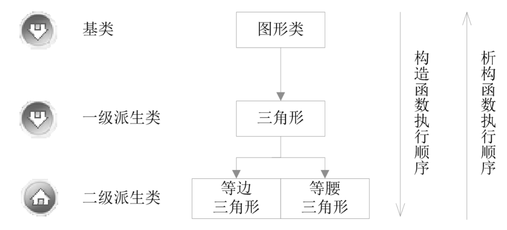
1.4.6 多态
1.4.6.1 重写虚方法
方法默认情况下不是虚拟的，除构造函数外，其他方法可以显式地声明为
virtual在方法前面加上关键字
virtual，则该方法称为虚方法==类中的成员字段和静态方法不能声明为
virtual==virtual只对类中的实例函数和属性有意义
// 声明一个虚方法
public virtual void Move()
{
Console.WriteLine("交通工具可以移动");
}- 定义虚方法后，可以在派生类中重写虚方法，使用关键字
override
// 在派生类中重写虚方法
public override void Move()
{
Console。WriteLine("火车可以移动");
}1.4.6.2 方法重载
指的是方法名相同，但参数的数据类型、个数和顺序不同的方法
当类中有两种以上同名方法（重载），需清楚要调用哪种方法
// 定义静态方法Add()，参数为两个int，返回值为int
public static int Add(int x, int y)
{
return x+y;
}
// 重载Add()，参数为一个int一个double，返回值为double
public double Add(int x, double y)
{
return x+y;
}
// 再次重载Add()，其参数个数较第一个函数增加为3个
public int Add(int x, int y, int z)
{
return x+y+z;
}1.4.7 结构
- 值类型，用来封装一组相关变量
结构修饰符 struct 结构名
{
}- 结构可包括构造函数、常量、字段、方法、属性、运算符、事件和嵌套类型等
// 声明一个矩形结构，定义宽高，Area()方法
public struct Rect
{
public double width;
public double height;
public double Area()
{
return width*height;
}
}向方法传递结构时，结构是通过传值方式进行传递的，不是作为引用传递
结构可以声明构造函数，但必须带参数
结构实例化，可以不用
new所有结构都直接继承自
System.ValueType，所以一个结构不能继承于另一个结构或类在结构中初始化实例字段是错误的
public struct Rect
{
public double width;
public double height;
// 构造函数
public Rect(double x, double y)
{
width = x;
height = y;
}
public double Area()
{
return width*height;
}
}
static void Main(string[] args)
{
Rect rect1; // 实例化一个矩形结构
rect1.width = 5;
rect1.height = 3;
Console.WriteLine("矩形面积为：" + rect1.Area());
Rect rect2 = new Rect(6, 4); // 使用构造函数实例化矩形结构
Console.WriteLine("矩形面积为：" + rect2.Area());
}1.5 控制台应用程序
1.5.1 主要语句
- 打印
// 打印且换行
// cw + 2下Tab 快捷生成该语句
System.Console.WriteLine();
// 打印不换行
System.Console.Write();- 读取
// 读取单个按键
System.Console.ReadKey();
// 读取字串
System.Console.ReadLine();1.5.2 示例
using System;
namespace fund
{
internal static class Program
{
static void Main()
{
int temp = 0;
// 使用int类方法Parse()，将接收的string强转为int
temp = int.Parse(Console.ReadLine());
// "结果为："+temp+30 temp和30会自动转为字符串，与"结果为："进行拼接
Console.WriteLine("结果为："+temp+30);
Console.ReadKey();
}
}
}1.6 文件操作
- 使用命名空间
using System.IO;
1.6.1 获取文件
// 获取对应路径下的文件
string path = @"C:\Users\echo\Desktop";
DirectoryInfo root = new DirectoryInfo(path);
FileInfo[] files = root.GetFiles();1.6.2 删除指定文件
// 遍历文件集合
for (int i = 0; i < files.Length; i++)
{
FileInfo fi = files[i];
// 打印 文件绝对路径
//Console.WriteLine(fi.FullName);
// 打印 文件名
//Console.WriteLine(fi.Name);
// 删除 指定文件
if (fi.Name == "123.txt")
{
// 传入绝对路径
File.Delete(fi.FullName);
}
}1.6.3 更改文件名
// 文件改名
bool isHave = fi.Name.Contains("123"); // 也可参数补全文件后缀，删更改指定文件类型的文件名
if (isHave)
{
// 获取原始绝对路径文件名
string srcFileName = fi.FullName;
// 定义新绝对路径文件名，不更改文件类型
string dstFileName = fi.Directory.FullName+@"\ddd"+fi.Extension;
// 对文件进行更名，并移动到指定位置
File.Move(srcFileName, dstFileName);
}1.7 随机数
1.7.1 Random类
- 通过
Random类产生，该类并非静态类，所以必须通过实例化产生
// 实例化一个random类，并产生1-33的随机整数
Random a = new random();
a.Next(1,34);1.7.2 例程1 – 双色球
具体代码文件见
D:\Program Files\Microsoft Visual Studio\projects\start\write以双色球开奖为例，6个红色球取值为1-33，1个蓝色球取值为1-16
界面搭建如图
- 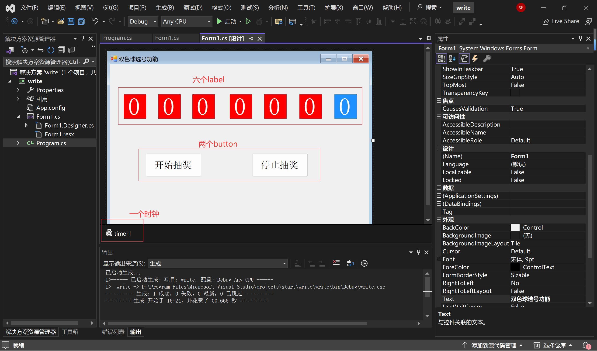
通过
开始抽奖按钮（button1），启动时钟，并设置时间间隔；停止抽奖按钮（button2）关闭时钟；timer1时钟触发tick事件内，执行产生7位随机数
// 开始抽奖按钮
private void button1_Click(object sender, EventArgs e)
{
timer1.Enabled = true;
timer1.Interval = 100;
}// 停止抽奖按钮
private void button2_Click(object sender, EventArgs e)
{
timer1.Enabled=false;
}// 时钟触发事件
private void timer1_Tick(object sender, EventArgs e)
{
Random a = new Random();
// 感觉生成7个随机数的代码有些冗余，不知道能不能通过循环实现，后续优化！！！
/*
// 简化代码
// 设置文本的 Label 集合
Label[] labels = {label1, label2, label3, label4, label5, label6};
// 循环设置每个 Label 的文本
foreach (Label label in labels)
{
label.Text = Convert.ToString(random.Next(1, 34));
}
label7.Text = Convert.ToString(a.Next(1, 17));
*/
label1.Text = Convert.ToString(a.Next(1,34));
label2.Text = Convert.ToString(a.Next(1, 34));
label3.Text = Convert.ToString(a.Next(1, 34));
label4.Text = Convert.ToString(a.Next(1, 34));
label5.Text = Convert.ToString(a.Next(1, 34));
label6.Text = Convert.ToString(a.Next(1, 34));
label7.Text = Convert.ToString(a.Next(1, 17));
}- 效果如下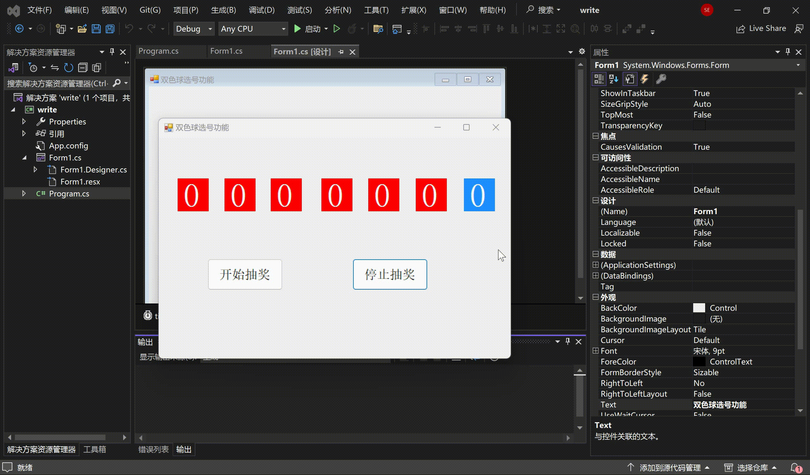
1.7.3 例程2 – 按键图片切换
具体代码文件见
D:\Program Files\Microsoft Visual Studio\projects\start\write2每次按键，随机切换图片
在
debug文件夹下新建一个img文件夹，并在其中存入1-6.jpg搭建界面如下
- 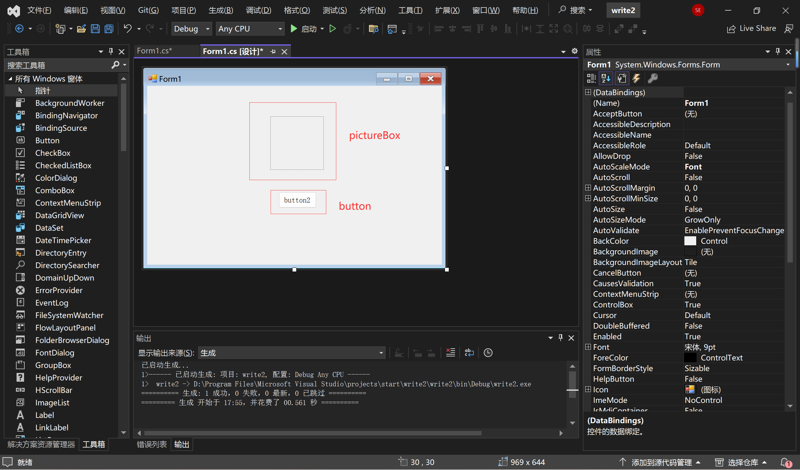
通过点击
button按钮，触发click事件，产生随机数，导入图片到pictureBox展示
// button_click事件
private void button2_Click(object sender, EventArgs e)
{
Random a = new Random();
double num = a.NextDouble();
// 产生1-6的数字
int picnum = Convert.ToInt32(Math.Floor(num*6) + 1);
// 图片载入
pictureBox1.SizeMode = PictureBoxSizeMode.StretchImage;
// 相对路径，默认路径为项目文件下的debug文件
pictureBox1.Image = Image.FromFile(@"img\" + picnum + ".jpg");
}- 效果如下

1.8 访问修饰符
所有的类型及其成员都具有可访问性级别
程序集通过编译单个或多个
.cs文件产生的.dll或.exepublic：同一程序集中的任何其他代码或引用该程序集的其他程序集都可访问该类型或成员private：只有同一class或struct中的代码可以访问类型或成员protected：只有**同一class或从其派生出的class**可以访问internal：同一程序集中的任何代码均可访问，但外部程序集不行protected internal：本程序集中及其他程序集的派生classprivate protected：在类内及本程序集派生类中可访问访问修饰符摘要表
- 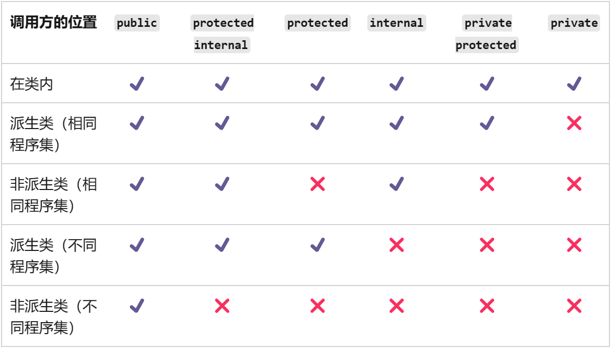
1.9 字段
- 什么是字段
- 字段(field)是一种表示与对象或类型（类与结构体）相关联的变量
- 字段是类型的成员，也被称为“成员变量”
- 类型方法体内定义的变量属于局部变量，不是字段
- 分类
- 实例字段：与实例化对象相关联的成员变量
- 静态字段：与类型相关联的成员变量，由
static修饰
1.10 属性
二、控件及事件 – B站刘金玉视频总结
2.1 控件简介
- 所有的控件都是对象，对象三要素属性、方法、事件
- 当控件从工具箱被拖到form窗体后，变成实例对象
- 控件分类
- 公共控件：以表单为主
- 容器控件：界面布局使用，使界面干净整洁
- 菜单和工具栏控件
- 组件
- 打印控件
- 对话框控件
- 数据控件
- WPF互操作性
- 控件基本操作：点选控件 => 更改其属性
2.2 Form窗体
2.2.1 基本介绍
Form1.cs[设计]文件：可视化窗体界面Form1.cs文件：后台代码界面Form1.Designer.cs文件：具体窗体设计代码，其中方法被调用Form窗体加载过程：
- 项目起点，
Program.cs中的Main()，创建Form实例 - 到
Form1.cs中调用InitializeComponent()，初始化窗体界面 - 再到
Form1.Designer.cs中执行相应代码，实现窗体和控件布局
- 项目起点，
2.2.2 例程 – Form窗体控制
具体代码文件见
D:\Program Files\Microsoft Visual Studio\projects\start\控件以两按钮分别控制Form窗体背景颜色及标题
拖两个
Button控件到Form窗体内，分别修改Text为：背景变色、换标题分别双击创建相应
ButtonClick事件，并自动跳转到Form.cs中生成相应方法
// 背景变色
private void button1_Click(object sender, EventArgs e)
{
// 注意ActiveForm，窗体必须是被激活的当前窗体，才能修改其属性
Form1.ActiveForm.BackColor = Color.AliceBlue;
}// 换标题
private void button2_Click(object sender, EventArgs e)
{
Form1.ActiveForm.Text = "换标题";
}- 效果如下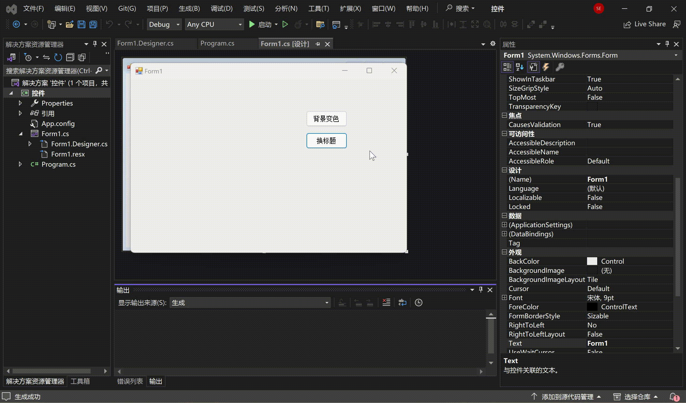
2.3 鼠标事件
具体代码文件见
D:\Program Files\Microsoft Visual Studio\projects\start\Mouse以
PictureBox显示本地图片，通过鼠标触发Click、MouseClick、DoubleClick、MouseHover事件
2.3.1 PictureBox显示图片
- 拖动该控件到
Form1窗体内 - 找到
Image属性，通过...导入本地图片即可
2.3.2 例程1 – Click事件
任意单击事件，包括鼠标、键盘等
点击后通过
MessageBox进行提示
// 单击事件
private void pictureBox1_Click(object sender, EventArgs e)
{
MessageBox.Show("Click事件");
}- 效果如下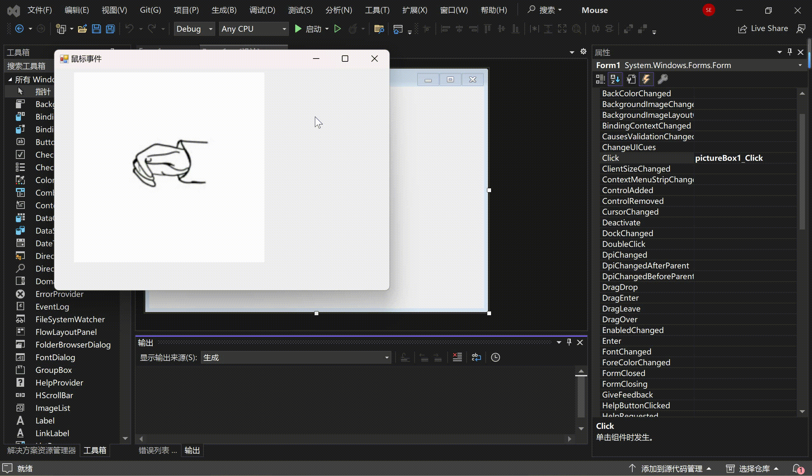
2.3.3 例程2 – MouseClick事件
- 鼠标单击事件
private void pictureBox1_MouseClick(object sender, MouseEventArgs e)
{
// e.Button.ToString()的取值分别为Left、Middle、Right，为鼠标三个按键
// 可用于条件判断
MessageBox.Show(e.Button.ToString());
}- 效果如下

2.3.4 例程3 – DoubleClick事件
任意双击事件（双击包含单击事件，当同时存在单击事件时，只触发单击事件）
同样通过
MessageBox提示
private void pictureBox1_DoubleClick(object sender, EventArgs e)
{
MessageBox.Show("DoubleClick事件");
}- 效果如下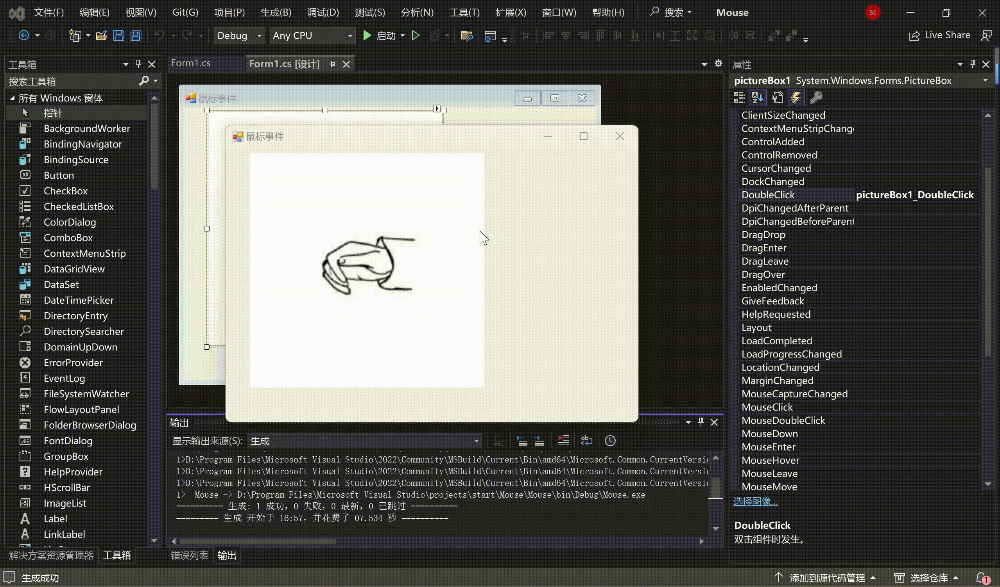
2.3.5 例程4 – MouseHover事件
- 当鼠标移动到上方时触发
private void pictureBox1_MouseHover(object sender, EventArgs e)
{
MessageBox.Show("MouseHover事件");
}- 效果如下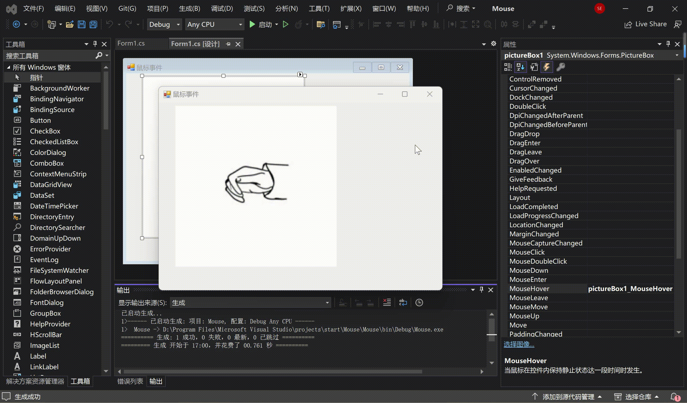
2.4 多窗体
2.4.1 创建启动窗体
- 创建一个登录界面，点击登陆后（此处不对账号密码进行判断），跳转界面
- 登录界面
Form1如下图所示- 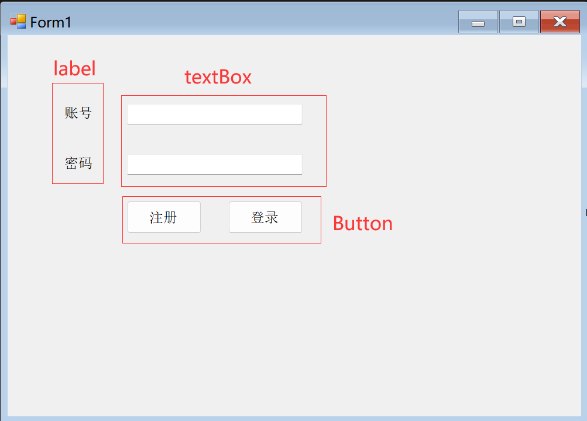
2.4.2 创建跳转窗体
- 跳转窗体界面
Form2如下图所示- 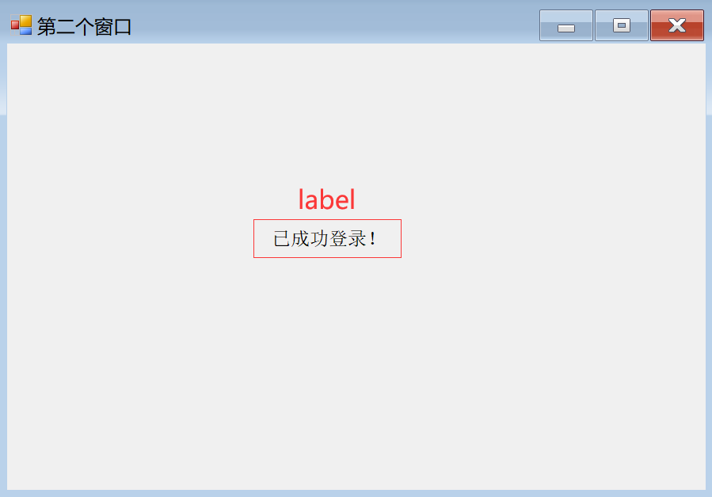
2.4.3 跳转
具体代码文件见
D:\Program Files\Microsoft Visual Studio\projects\start\MutipleForm点击启动界面的
登录按钮后，跳转到新窗体
2.4.3.1 例程1 – 跳转-不关闭原窗口
- 双击
Form1登录按钮，生成Click事件
// 登录弹窗
private void button2_Click(object sender, EventArgs e)
{
Form2 f2 = new Form2();
f2.Show();
}- 实现效果如下图，此时，关闭
Form1，Form2也自动关闭（因为Form2在Form1类内部生成，视作Form1窗体的一部分）；反之需逐一关闭
2.4.3.2 例程2 – 跳转-隐藏原窗口
隐藏窗口后，该窗口仍然占据内存空间，正常运行，需通过任务管理器进行关闭！！！
修改
button2_Click方法
private void button2_Click(object sender, EventArgs e)
{
Form2 f2 = new Form2();
f2.Show();
// 因为button2_Click()方法在类Form1内，所以以下两种方法皆可，都是对Form1窗口进行隐藏
this.Hide();
// Hide();
}- 效果如下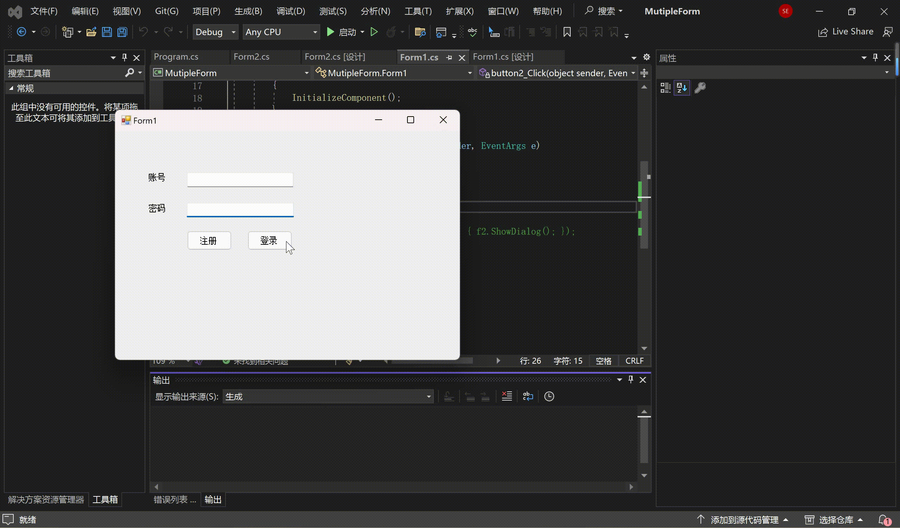
2.4.3.3 例程3 – 跳转-关闭原窗口
扩展
窗体
ShowDialog()方法，默认使用模态方式模态：以当前窗体为焦点，不能点击该程序的其他窗体
（1）委托线程
首先在
Form1.cs导入命名空间using System.Threading;接着修改
button2_Click()
private void button2_Click(object sender, EventArgs e)
{
Form2 f2 = new Form2();
//f2.Show();
//this.Hide();
// 委托一个线程去显示新窗体
Thread t1 = new Thread(delegate () { f2.ShowDialog(); });
// 开启线程
t1.Start();
Close();
}- 效果如下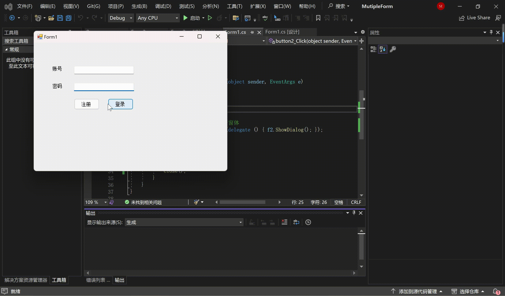
（2）Application.Run()方法
- 通过在
Program.cs启动文件中建立标志变量监测第一个窗口关闭，之后打开Form2
// Program.cs文件 Prigram类
internal static class Program
{
// 定义标志变量flag
public static bool flag = false;
/// <summary>
/// 应用程序的主入口点。
/// </summary>
[STAThread]
static void Main()
{
Application.EnableVisualStyles();
Application.SetCompatibleTextRenderingDefault(false);
Application.Run(new Form1());
// 当原窗口被关闭，flag==true时，打开新窗口
if (flag)
{
Application.Run(new Form2());
}
}
}// Form1.cs文件中方法 button2_Click()
private void button2_Click(object sender, EventArgs e)
{
// 因为flag定义在Program类中，所以重新赋值时，需要加上前缀Program.flag
Program.flag = true;
// 关闭Form1
Close();
}- 效果如下
%E6%96%B9%E6%B3%95.gif)
2.5 复选框及复选框列表
CheckBox复选框控件CheckBoxList复选框列表控件：内含多个复选框控件（需要自行配置）
2.5.1 CheckBox控件
图例：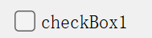
CheckBox.Checked属性：获取该复选框有没有被勾选CheckBox.Text属性：获取该复选框文本内容
2.5.2 CheckBoxList控件
- 选择时，首先会定位，然后才能选中
CheckBoxList.SelectItem属性：获取当前选中项checkedListBox.Items.Add(string)：动态添加选项checkedListBox.Items.Remove：动态删除选项ItemCheck事件：当复选框被勾选时触发SelectedIndexChanged事件：未勾选选项，选中选项标题时就会触发
2.6 时钟
时间单位
ms作用：对有规律的事物进行输出，每隔指定时间，对一程序进行输出
Timer配置配置时间，
Interval属性是否启动，
Enabled属性配置事件，
Tick事件，在其中执行相应事件
// Enable后，每隔Interval时间，执行一次Tick事件
private void timer1_Tick(object sender, EventArgs e)
{
// 通过label控件，将当前时间显示在窗口，并每隔Interval时间刷新一下
label1.Text = DateTime.Now.ToString();
}2.7 图片
2.7.1 PictureBox控件
PictureBox控件Picture.SizeMode属性，更改图片显示拉伸情况
// 将图片设置为自动拉伸，大小随展示图片框变化
pictureBox1.SizeMode = PictureBoxSizeMode.StretchImage;PictureBox.Image属性，导入图片
// 传入图片例子
PictureBox.Image = Image.FromFile("图片位置");
// Application.StartupPath，位置为xx\bin\debug
PictureBox.Image = Image.FromFile(Application.StartupPath + @"\自建图片位置");图片位置坐标
PictureBox.Left属性，int类型，为控件左边缘与form窗体左边缘的像素距离，即可代表**x坐标**的值PictureBox.Top属性，控件上边缘与Form窗体上边缘的像素距离，代表**y坐标**的值- （x, y）坐标为图片左上角顶点坐标，xy轴方向同图像坐标
// 使用时钟控件，实现图片的自动水平移动
private void timer1_Tick(object sender, EventArgs e)
{
// enable时钟后，随interval时间间隔改变图片x坐标
pictureBox1.Left += 1;
// 改变图片y坐标
pictureBox1.Top += 1;
}2.7.2 例程1 – 猫咪避障
具体代码文件见
D:\Program Files\Microsoft Visual Studio\projects\start\plane通过使用
MouseDown、MouseUp、MouseMove三个事件，实现鼠标拖动猫咪避障首先定外部变量
// 标志变量记录鼠标左键是否按下
bool flag = false;
// 图片初始坐标
int oldX = 0;
int oldY = 0;- 当鼠标左键在图片中被按下时，获取当前鼠标坐标，并作为图片初始移动坐标
private void pictureBox1_MouseDown(object sender, MouseEventArgs e)
{
// 当被按下的键为鼠标左键时执行
if(e.Button == MouseButtons.Left)
{
flag = true;
oldX = e.X;
oldY = e.Y;
}
}- 当鼠标左键抬起时，置
flag变量为false，停止鼠标拖动图片移动
private void pictureBox1_MouseUp(object sender, MouseEventArgs e)
{
if (e.Button == MouseButtons.Left)
{
flag = false;
}
}- 当鼠标左键被按下并移动时，更新图片坐标
private void pictureBox1_MouseMove(object sender, MouseEventArgs e)
{
if (flag)
{
// 更新xy坐标
// 拖动的效果是连续的，因为每当鼠标移动1个像素，图片立即就进行相应移动
// 所以从视觉上来看是连续的，非卡顿的
pictureBox1.Left += e.X - oldX;
pictureBox1.Top += e.Y - oldY;
}
}- 效果如下

2.7.3 例程2 – 画布软件
具体代码文件见
D:\Program Files\Microsoft Visual Studio\projects\start\draw同样使用
MouseDown、MouseUp、MouseMove、ButtonClick事件实现复制粘贴图片、画笔绘图操作搭建界面如图
- 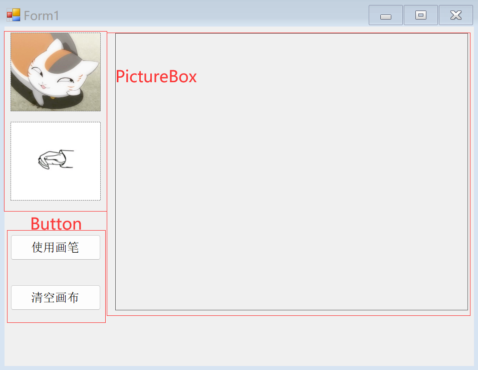
首先定义全局变量
// 定义图片对象
Image curImg;
// 记录鼠标第一次点击
bool moving = false;
// 定义图片尺寸
int curImgWidth = 0;
int curImgHeight = 0;
// 记录画笔颜色
Color curColor;
// 是否使用画笔
bool usePen = false;- 当已有的两张图片被点击，获取该图片路径及尺寸，并把
usePen置为false
// 第一张图的MouseDown事件
private void pictureBox1_MouseDown(object sender, MouseEventArgs e)
{
curImg = Image.FromFile(@"img\1.jpg");
curImgWidth = pictureBox1.Width;
curImgHeight = pictureBox1.Height;
// 为避免在图片粘贴时，同步产生画笔绘制效果，将usePen置为false
usePen = false;
}// 第二张图MouseDown事件
private void pictureBox2_MouseDown(object sender, MouseEventArgs e)
{
curImg = Image.FromFile(@"img\2.jpg");
curImgWidth = pictureBox2.Width;
curImgHeight = pictureBox2.Height;
usePen = false;
}- 当
使用画笔按钮被按下后，弹出颜色选框，并设定画笔颜色
// "使用画笔"按钮，click事件
private void button1_Click(object sender, EventArgs e)
{
// colorDialog控件
// colorDialog1.ShowDialog()，开启颜色选框，返回颜色选择状态
// 如果选择完毕，返回ok
if (colorDialog1.ShowDialog() == DialogResult.OK)
{
// 将当前选中的颜色赋值给curColor对象
curColor = colorDialog1.Color;
// 画笔绘制时，将要粘贴的图片对象置空，避免粘贴图片与画笔绘制冲突
curImg = null;
// 将画笔标志变量置为true
usePen = true;
}
}- 对于画布，分别处理
MouseDown、MouseUp、MouseMOve事件
// MouseDown事件
private void pictureBox3_MouseDown(object sender, MouseEventArgs e)
{
moving = true;
// 创建绘制功能
Graphics g = pictureBox3.CreateGraphics();
// 当图片没有装载的时候，默认值为null
if(curImg == null && usePen == false)
{
MessageBox.Show("没有点选图片或画笔");
return;
}
if(curImg != null && usePen == false)
{
// 在xy坐标位置绘制图片，贴图
g.DrawImage(curImg, e.X - curImgWidth / 2, e.Y - curImgHeight / 2, curImgWidth, curImgHeight);
}
}// MouseUp事件
private void pictureBox3_MouseUp(object sender, MouseEventArgs e)
{
moving = false;
}// MouseMove事件
private void pictureBox3_MouseMove(object sender, MouseEventArgs e)
{
if (moving && usePen)
{
// 创建画布功能
Graphics g = pictureBox3.CreateGraphics();
// 画图前必须要先创建画笔
// 构造函数参数是要设置的 画笔颜色
Pen pen = new Pen(curColor);
g.DrawEllipse(pen,e.X,e.Y,2,2);
}
}- 对于
清空画布按钮，将背景填充为白色即可
// "清空画布"按钮
private void button2_Click(object sender, EventArgs e)
{
// 清空画布，填充白色
pictureBox3.CreateGraphics().Clear(Color.White);
}- 效果如下

2.8、Chart图表控件
2.8.1 界面布局
Tablelayout容器控件- 每个单元格默认放置一个控件
- 更好地规划界面
2.8.2 图表界面简介
Chart控件- 关键属性的配置，如标题、坐标系、图例
2.8.3 例程 – 图像绘制
- 具体代码文件见
D:\Program Files\Microsoft Visual Studio\projects\start\chart
2.8.3.1 界面布局
- 在Form内，任意放置容器控件
TableLayoutPanel - 修改属性
Dock，填充方式，此处选用Fill，如下图所示- 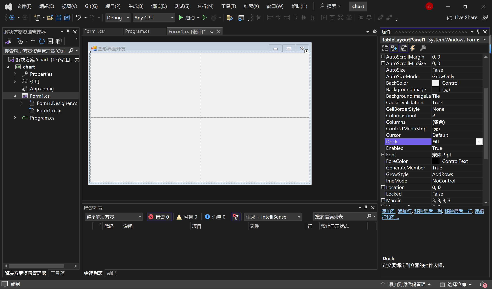
2.8.3.2 插入图形界面
- 在
TableLayoutPanel任一单元格内放置Chart图形控件 - 同样修改填充属性
Dock，全填充Fill，效果如图- 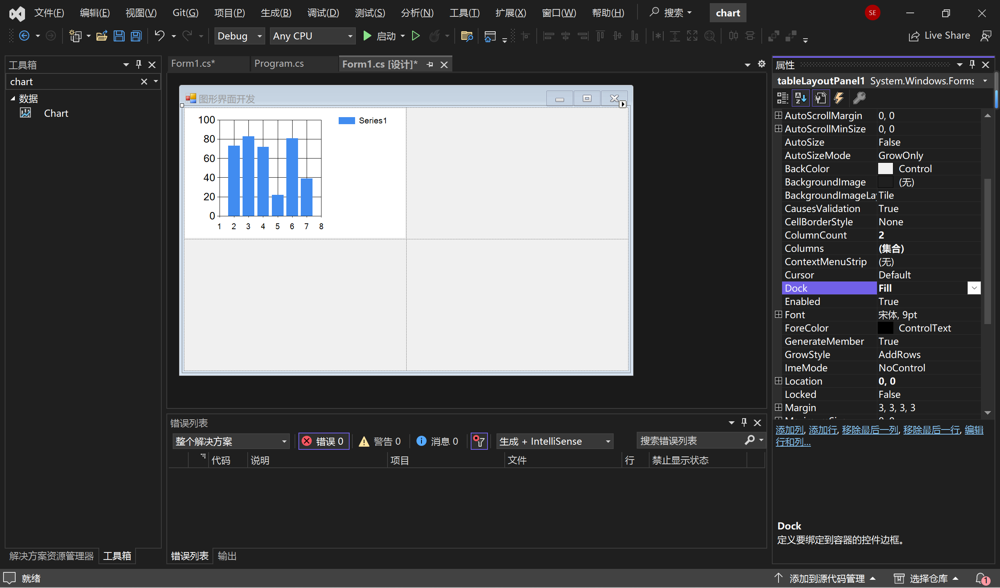
2.8.3.2.1 图表类属性-Titels
点击
...打开Titles集合编辑器- 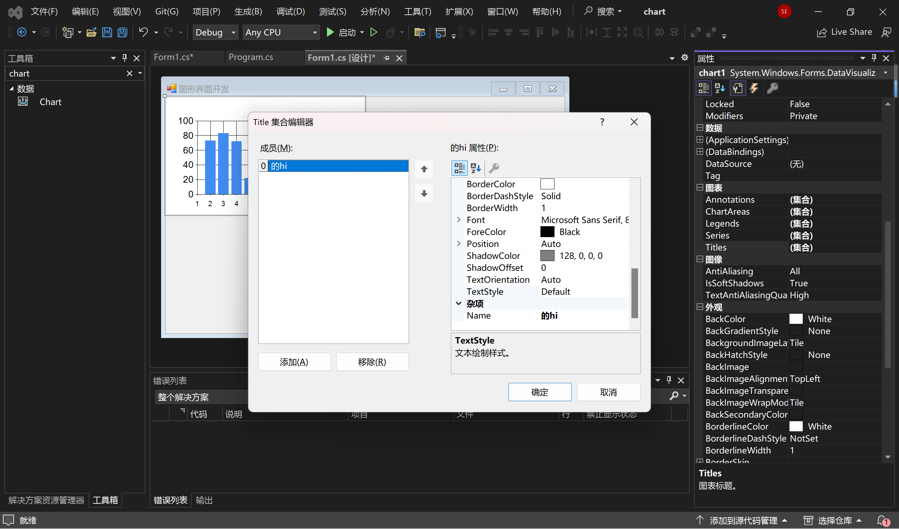
添加成员（可添加多个，即显示出来的图像会有相应个数的标题）
- 成员属性
Text：设置标题名称 - 成员属性
ToolTip：设置提示消息，当用户鼠标放置在图形标题名称上时
- 成员属性
2.8.3.2.2 图标类属性-Series
可设置图像类型，如条形图、曲线图、扇形图
同样点击
...打开Series集合编辑器添加成员（每添加一个，显示图形上就会产生一个新的图例）
- 成员属性
ChartType：设置图像类型，如：Column、Spline、Pie等
- 成员属性
2.8.3.2.3 图标类属性-Legends
2.8.3.3 数据传入
- 主要函数
chart1.Series[0].Points.Add(数据序列);
2.8.3.3.1 Form窗体Load事件
使用
Form窗体Load事件（窗体加载完成时，就绘制好图线）双击
Load事件，在Form1_Load方法中随机产生10个数据，窗体加载完成就绘制出完整图形
private void Form1_Load(object sender, EventArgs e)
{
Random rnd = new Random();
for (int i = 0; i < 10; i++)
{
//Random rnd = new Random();
// 给图表传入数据
chart1.Series[0].Points.Add(rnd.Next(0, 101));
}
}2.8.3.3.2 Timer组件
行为属性
Enable：启动timer计时，必须设置为True才会启动行为属性
Interval：时间间隔，单位ms，此例设置为500双击
Timer组件，timer1_Tick中每隔500ms产生一个随机数，并绘制到图形上
private void timer1_Tick(object sender, EventArgs e)
{
/*
// 若只显示最新的10个点
if (chart1.Series[0].Points.Count() == 10)
{
// 当存在10个数据时，移除第一个点
chart1.Series[0].Points.RemoveAt(0);
}
*/
Random rnd = new Random();
chart1.Series[0].Points.Add(rnd.Next(0, 101));
}2.8.3.3.3 数据点取值可视化
在
Timer组件基础上进行代码的修改首先引入
using System.Windows.Forms.DataVisualization.Charting;修改代码如下
private void timer1_Tick(object sender, EventArgs e)
{
// 若只显示最新的10个点
if (chart1.Series[0].Points.Count() == 10)
{
// 当存在10个数据时，移除第一个点
chart1.Series[0].Points.RemoveAt(0);
}
Random rnd = new Random();
int curnum = rnd.Next(0, 101);
// 创建数据点对象
DataPoint dp1 = new DataPoint();
// 通过double[] 为数据点传入y值
dp1.YValues = new double[] { curnum };
// 定义数据点标签
dp1.Label = curnum.ToString();
chart1.Series[0].Points.Add(dp1);
}2.8.3.4 同数据-多图展示
- 在6.3.3.3代码基础上修改，通过for循环同时绘制4个图表
private void timer1_Tick(object sender, EventArgs e)
{
for (int i = 1;i <= 4;i++)
{
// 在tableLayoutPanel1中找到图表控件，并取返回的同名子控件（find参数要设置为true）数组的第一个，转换为Chart类型
Chart myChart = tableLayoutPanel1.Controls.Find("chart" + i.ToString(), true)[0] as Chart;
// 若只显示最新的10个点
if (myChart.Series[0].Points.Count() == 10)
{
// 当存在10个数据时，移除第一个点
myChart.Series[0].Points.RemoveAt(0);
}
Random rnd = new Random();
int curnum = rnd.Next(0, 11);
DataPoint dp1 = new DataPoint();
dp1.YValues = new double[] { curnum };
dp1.Label = curnum.ToString();
myChart.Series[0].Points.Add(dp1);
}
}- 效果如下

2.9 右键菜单及打开文件对话框
2.9.1 右键菜单
- 使用控件
ContexMenuStrip，设置好菜单选项 Form窗体、PictureBox等控件，有个ContextMenuStrip行为属性，可在控件内启用相应的右键菜单功能- 设置好的每一个菜单选项，都是一个子控件，拥有自己的属性方法及触发事件
2.9.2 打开文件对话框
- 使用控件
openFileDialogopenFileDialog.Title属性，设置对话框标题openFileDialog.Filter属性，设置文件类型过滤openFileDialog.InitialDirectory属性，设置文件对话框打开初始路径openFileDialog.ShowDialog()方法，打开文件对话框openFileDialog.FileName属性，返回打开文件的绝对路径
2.9.3 例程 – 右键菜单更换图片
具体代码文件见D:\Program Files\Microsoft Visual Studio\projects\start\RightMenu界面设计如下
- 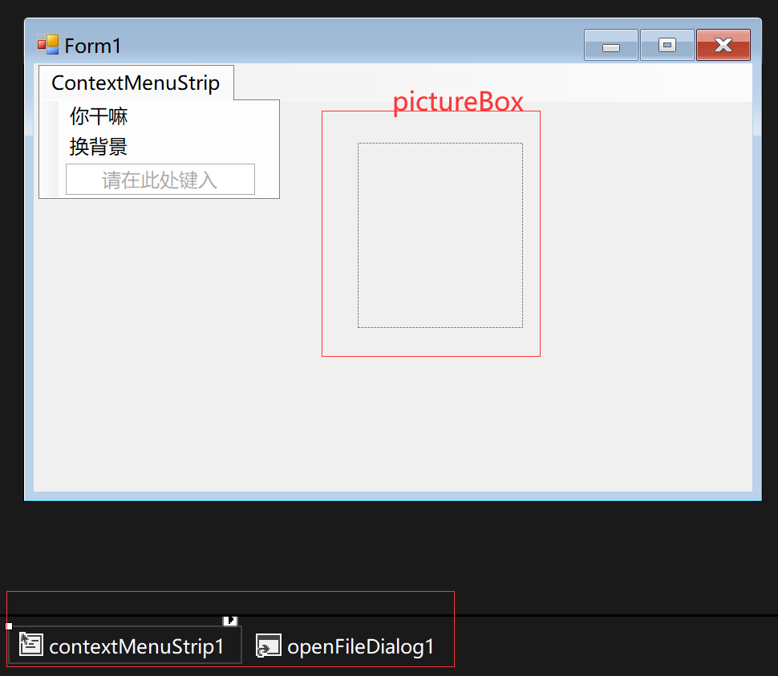
首先设置右键菜单选项，并在
Form窗体属性中设置ContextMenuStrip为定义好的右键菜单控件名对于右键菜单第一个选项
你干嘛，单击该选项，并创建click事件
// 当"你干嘛"选项被选中后，触发该click事件，通过messageBox打印相应语句
private void 你干嘛ToolStripMenuItem_Click(object sender, EventArgs e)
{
MessageBox.Show("你干嘛小黑子");
}- 对于第二个选项
换背景，同样创建click事件
private void 换背景ToolStripMenuItem_Click(object sender, EventArgs e)
{
// 设置文件选框标题
openFileDialog1.Title = "请选择一张图片";
// 文件类型过滤
// 配置格式：文件说明|文件扩展名
// 同种类型文件，用分号隔开
openFileDialog1.Filter = "图片文件(*.bmp;*.jpg;*.png;*.jepg;*.gif)|*.bmp;*.jpg;*.png;*.jepg;*.gif|任意类型(*.*)|*.*";
// 选框默认打开路径为前一次文件位置
// 可对选框打开文件位置进行默认设置
// openFileDialog1.InitialDirectory = Application.StartupPath;
// 当文件成功被选择
if(openFileDialog1.ShowDialog() == DialogResult.OK)
{
pictureBox1.SizeMode = PictureBoxSizeMode.StretchImage;
// 将选择的文件绝对路径传给pictureBox进行展示
pictureBox1.Image = Image.FromFile(openFileDialog1.FileName);
}
}- 效果展示

2.10 （本节因没有本地用户和组，无法进行操作学习！！！！）
2.10.1 下拉列表
ComboBox控件，下拉列表ComboBox.DropDownStyle属性，设置下拉列表样式，可用取值分别为ComboBox.Items.Add()方法，添加项ComboBox.Items.Contains()，判断当前下拉框是否包含指定项ComboBox.Text属性，获取当前选中项文本ComboBox.Items.Remove()方法，删除指定项
2.10.2
directoryEntry控件
2.11 系统语音功能及日期时间
2.11.1 语音功能
- 本质上是调用系统的
tts功能（将文本转为语音的功能，tts在com组件中有）
// 核心代码
Type type = Type.GetTypeFromProgID("SAPI.SpVoice");
dynamic spVoice = Activator.CreateInstance(type);
spVoice.Speak("Text To Speech 语音朗读文本技术");2.11.2 日期时间
dateTimePicker控件Format属性，设置日期格式CustomFormat属性，当Format设置为Custom自定义格式时，可自行设日期时间格式，如
// 设置为以下格式
yyyy年MM月dd日 HH:mm:ss2.11.3 例程 – 个性语音闹钟
具体代码文件见D:\Program Files\Microsoft Visual Studio\projects\start\Voice搭建界面如下
- 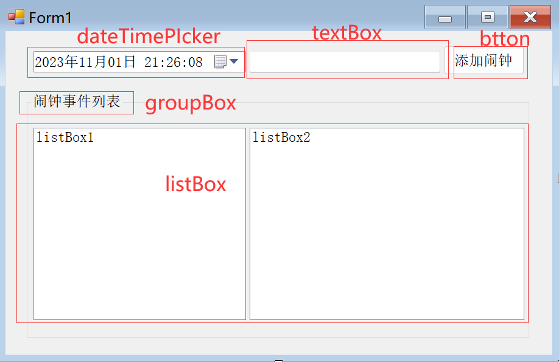
当按下
添加闹钟按钮后，将dateTimePicker的日期时间及textBox中的自定义事件分别存储到listBox中
private void button1_Click(object sender, EventArgs e)
{
// 必须使用Value属性，不能使用Text，不然没有反应！！！
listBox1.Items.Add(dateTimePicker1.Value);
listBox2.Items.Add(textBox1.Text);
}接着，在界面内添加一个
timer时钟控件，设置默认状态enable为启动程序开始运行，
timerTick事件，不断读取listBox1中的时间，当其与当前系统时间一致时，启动语音模块，并朗读事件，之后删除该闹钟事件
private void timer1_Tick(object sender, EventArgs e)
{
// 遍历listBox1中的时间
for(int i = 0; i < listBox1.Items.Count; i++)
{
// 找到预设闹钟时间
if (listBox1.Items[i].ToString() == DateTime.Now.ToString())
{
// 执行语音
// 找到语音模块
Type t = Type.GetTypeFromProgID("SAPI.SpVoice");
// 创建语音实例
// dynamic 动态进行类型转换，可规避语法错误
dynamic mySp = Activator.CreateInstance(t);
// 语音外放
mySp.Speak(listBox2.Items[i].ToString());
// 删除闹钟事件
listBox1.Items.RemoveAt(i);
listBox2.Items.RemoveAt(i);
return;
}
}
}效果如下
2.12 列表视图
2.12.1 comboBox、listBox、listView的区别
comboBox控件：下拉列表，有下拉、滚动条、下拉+输入三种模式listBox控件：单行项目记录listView控件：简单的项目行，表格的感觉
2.12.2 配置listView
Columns属性：设置列标题- 添加成员后通过
Text设置列标题名 - 同时通过
TextAlign设置居中状态
- 添加成员后通过
view属性：调整视图模式details可在构建界面时展示出列表情况，如列标题
Items属性：Text设置当前行第一个单元格名称（行标题）SubItems设置第二个及其之后单元格ImageIndex属性，配置图表，使用SmallImageList中的图片- 使用前先要将
imageList控件拖到Form窗体中，并通过Images属性导入图片
- 使用前先要将
2.12.3 例程1 – 表格记录软件
具体代码文件见D:\Program Files\Microsoft Visual Studio\projects\start\listView界面搭建如下
- 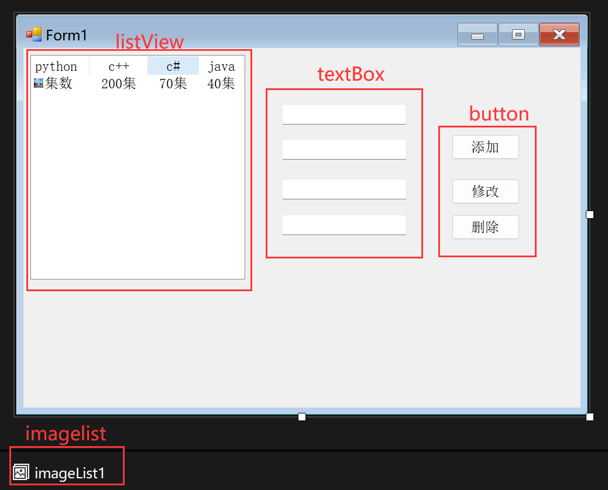
imageList要与ListView关联起来首先是
添加按键，在textBox中输入文本后，添加进表格
// "添加"按键事件
private void button1_Click(object sender, EventArgs e)
{
// 添加一行Item
// new ListViewItem()的参数分别为每一单元格的Text数组，和ImageList索引
// listView1.Items.Add(new ListViewItem(new string[] {"1","2","3","4"}, 2));
// 输入添加
listView1.Items.Add(new ListViewItem(new string[] { textBox1.Text, textBox2.Text, textBox3.Text, textBox4.Text }, 2));
// 鼠标单击选中后，修改已有单元格
}- 对于
修改按键，鼠标选中某一行后，将改行文本显示在textBox中，修改文本过后，更新表格
// 外部变量，选中对象索引
int ind = -1;// 鼠标选中任意行显示到textBox
private void listView1_SelectedIndexChanged(object sender, EventArgs e)
{
// 当选中对象不为空
if (listView1.SelectedItems.Count != 0)
{
// 获取最新选择对象在listview1中的索引
ind = listView1.SelectedIndices[0];
// 将当前listview中被点击的行名称显示到textBox
textBox1.Text = listView1.Items[ind].SubItems[0].Text;
textBox2.Text = listView1.Items[ind].SubItems[1].Text;
textBox3.Text = listView1.Items[ind].SubItems[2].Text;
textBox4.Text = listView1.Items[ind].SubItems[3].Text;
}
}// 修改按钮事件
private void button2_Click(object sender, EventArgs e)
{
// 修改
if (listView1.SelectedItems.Count != 0)
{
// 获取最新选择对象在listview1中的索引
ind = listView1.SelectedIndices[0];
// 修改选中行表格数据
listView1.Items[ind].SubItems[0].Text = textBox1.Text;
listView1.Items[ind].SubItems[1].Text = textBox2.Text;
listView1.Items[ind].SubItems[2].Text = textBox3.Text;
listView1.Items[ind].SubItems[3].Text = textBox4.Text;
}
}- 对于
删除按钮，当某行被选中时，可被删除
private void button3_Click(object sender, EventArgs e)
{
// 删除
if(ind != -1)
{
listView1.Items.RemoveAt(ind);
}
}效果如下
2.12.4 例程2 – 图片上传软件
具体代码文件见D:\Program Files\Microsoft Visual Studio\projects\start\listView界面搭建如下
- 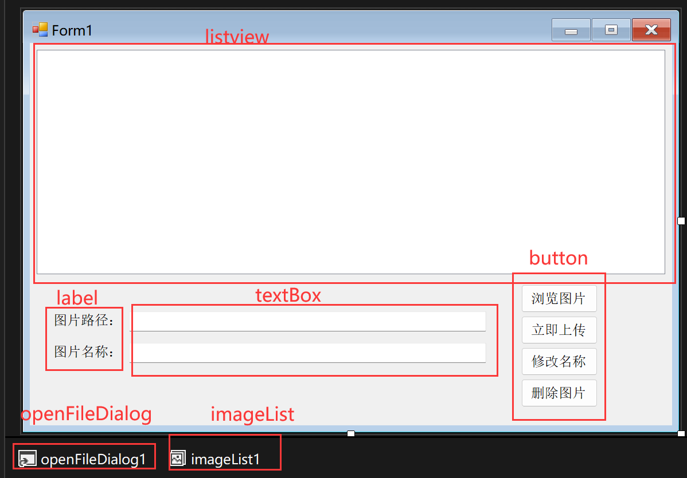
listview要与imagelist关联起来首先是
浏览图片按键，按下后打开文件对话框，配置文件格式，当用户选中之后将其绝对路径显示到图片路径
// 浏览图片按键事件
private void button1_Click(object sender, EventArgs e)
{
// 过滤图片类型
openFileDialog1.Filter = "图片文件(*.png;*.jpg;*.gif)|*.png;*.jpg;*.gif";
if (openFileDialog1.ShowDialog() == DialogResult.OK)
{
// 将文件绝对路径赋给textBox1
textBox1.Text = openFileDialog1.FileName;
}
}- 对于
立即上传按键，按下后，首先根据textBox1中的图像路径，将图片按指定方式命名并存到相应文件夹下；同时，在textBox2中自定义名称，之后将该图片展示到listView中
// 立即上传按钮事件
private void button2_Click(object sender, EventArgs e)
{
// 从路径获取image对象
Image demo = Image.FromFile(textBox1.Text);
// 以时间格式命名
demo.Save(Application.StartupPath + @"\img\" + DateTime.Now.ToString("yyyyMMddHHmmss") + ".jpg");
// 首先的导入imagelist
imageList1.Images.Add(demo);
// 将imagelist与listview进行关联
listView1.LargeImageList = imageList1;
// 从imagelist获取最新的图片，并命名为textBox2，添加到listview
listView1.Items.Add(textBox2.Text, imageList1.Images.Count - 1);
}- 对于
修改名称按键，首先当鼠标选中任意图片后，将其在listview中的名称显示到textBox2中；之后对该名称进行修改，按下修改名称按键后，更改listview中对应图片名称
// 当前选中图片索引
int ind = -1;// 鼠标任意选中图片
private void listView1_SelectedIndexChanged(object sender, EventArgs e)
{
if (listView1.SelectedItems.Count != 0)
{
// 获取最新选择对象在listview1中的索引
ind = listView1.SelectedIndices[0];
// 将当前listview中被点击的图片名称显示到textBox2
textBox2.Text = listView1.Items[ind].Text;
}
}// 修改对应名称
private void button3_Click(object sender, EventArgs e)
{
if (ind != -1)
{
listView1.Items[ind].Text = textBox2.Text;
}
else
{
MessageBox.Show("未选中图片");
}
}- 对于
删除图片按钮事件
private void button4_Click(object sender, EventArgs e)
{
if(ind != -1)
{
// 从llistview中删除鼠标选中图片
listView1.Items.RemoveAt(ind);
}
else
{
MessageBox.Show("未选中图片");
}
}效果如下
2.13 状态栏及富文本框
menuStrip控件，搭建界面菜单fontDialog控件，字体对话框colorDialog控件，颜色对话框
2.13.1 状态栏
statusStrip控件
2.13.2 富文本框
richTextBox控件
2.13.3 例程 – 个性化记事本
- ==有bug，不知道怎么解决！！！==
三、开发例子 – B站刘金玉视频总结
3.1 简易谷歌浏览器开发
3.1.1 主要内容
WebBrowser控件，默认调用IE浏览器作为内核，但该内核已经久远，会报错cefsharp，第三方控件，通过管理NuGet程序包下载，使用Chrome内核- 使用时，需要引入命名空间
using CefSharp;
using CefSharp.WinForms;3.1.2 实现过程
具体代码见
D:\Program Files\Microsoft Visual Studio\projects\start\Brower搭建界面布局如下
- 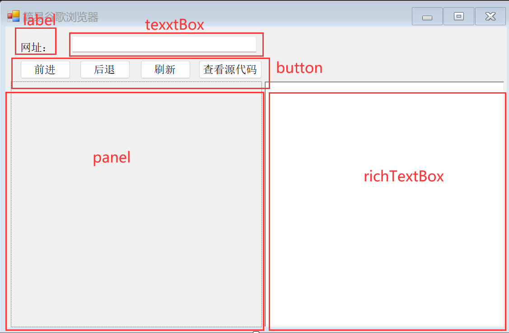
首先在外部声明全局变量
ChromiumWebBrowser myChrome;- 不拖动
CefSharp控件，通过代码调用
// 通过窗体加载事件配置浏览器
private void Form1_Load(object sender, EventArgs e)
{
// 载入谷歌浏览器默认配置，并初始化内核
Cef.Initialize(new CefSettings());
// 设置浏览器默认打开地址
myChrome = new ChromiumWebBrowser("https://www.bilibili.com");
// 将网页显示到panel中
panel1.Controls.Add(myChrome);
}- 在
textBox1中输入网址后，按回车进行调换
// 通过textBox按键抬起事件
private void textBox1_KeyUp(object sender, KeyEventArgs e)
{
// 当按下回车
if(e.KeyCode == Keys.Enter)
{
// webBrowser1.Url = new Uri(textBox1.Text);
// 将textBox1中文本转为字符串，传给Chrome进行网页跳转
myChrome.LoadUrl(textBox1.Text.ToString());
}
}- 实现浏览器的前进、后退、刷新
// 前进
private void button1_Click(object sender, EventArgs e)
{
myChrome.Forward();
}// 后退
private void button2_Click(object sender, EventArgs e)
{
myChrome.Back();
}// 刷新
private void button3_Click(object sender, EventArgs e)
{
myChrome.Reload();
}// 查看源代码 调用时一直转圈，没有显示出来，程序还卡了
private void button4_Click(object sender, EventArgs e)
{
richTextBox1.Text = myChrome.GetSourceAsync().Result;
}3.2 超市商品分类树
3.2.1 主要内容
treeView树形控件，根节点，子节点
3.2.2 实现过程
具体代码见
D:\Program Files\Microsoft Visual Studio\projects\start\TreeView搭建界面如下
- 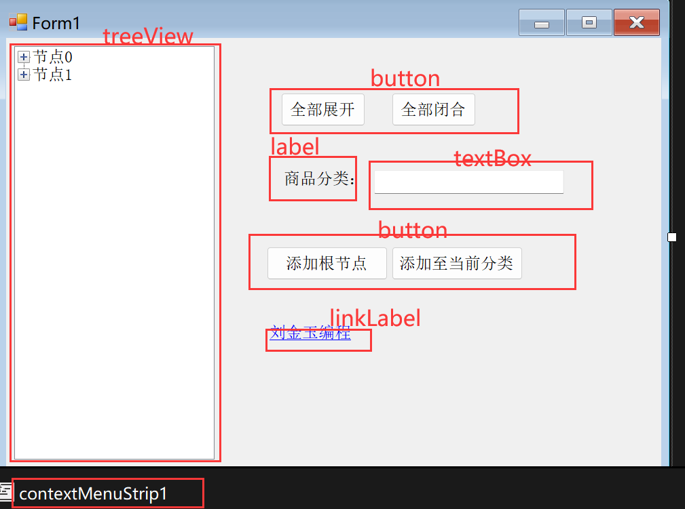
全部展开功能
private void button1_Click(object sender, EventArgs e)
{
// 全部展开，调用ExpandAll()方法
treeView1.ExpandAll();
}全部闭合功能
private void button2_Click(object sender, EventArgs e)
{
// 全部闭合，调用CollapseAll()方法
treeView1.CollapseAll();
}添加根节点功能
private void button3_Click(object sender, EventArgs e)
{
// 将textBox中的文本添加到根节点
treeView1.Nodes.Add(textBox1.Text);
}添加至当前分类功能
private void button4_Click(object sender, EventArgs e)
{
// 在被选中的根节点下添加子节点
treeView1.SelectedNode.Nodes.Add(textBox1.Text);
}右键删除- 使用
contextMenuStrip控件，添加删除选项，并绑定treeview
- 使用
private void 删除选中项ToolStripMenuItem_Click(object sender, EventArgs e)
{
// 获取当前选中项（根节点或子节点）
TreeNode select = treeView1.SelectedNode;
// 删除该节点（根节点或子节点）
treeView1.Nodes.Remove(select);
}网页链接
private void linkLabel1_LinkClicked(object sender, LinkLabelLinkClickedEventArgs e)
{
System.Diagnostics.Process.Start("http://bcczcs.com");
}3.3 红绿灯交通模拟 – 调用线程
3.3.1 主要内容
backgroundWorker后台线程
3.3.2 实现过程
具体代码见
D:\Program Files\Microsoft Visual Studio\projects\start\Traffic搭建界面
- 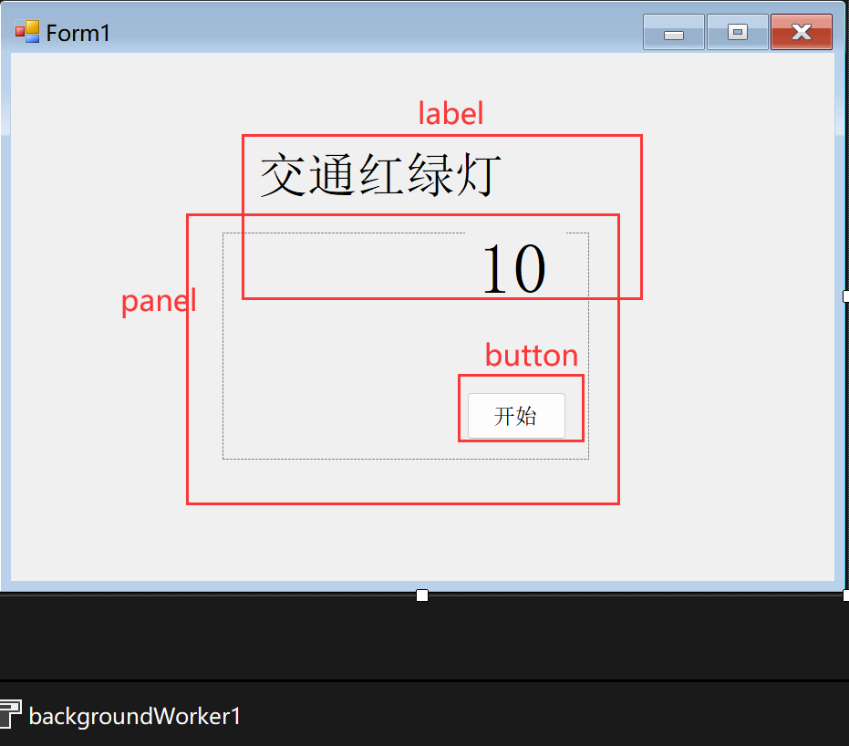
引入全局变量
int count = 10;
Graphics g;- 在面板内绘制红绿灯
// 窗体自带一个onpaint事件用来重绘winform界面
// 需要对该事件进行重写，以达到红绿灯显示的连续性，解决灯消失不显示的情况
protected override void OnPaint(PaintEventArgs e)
{
base.OnPaint(e);
// 在面板内绘制实心圆
g = panel1.CreateGraphics();
// g.DrawEllipse(new Pen(Color.Red), 0, 0, 40, 40);
// 创建笔刷
Brush brush = new SolidBrush(Color.Red);
// 绘制红绿灯
g.FillEllipse(brush, 0, 0, 40, 40);
}- 按下
开始
private void button1_Click(object sender, EventArgs e)
{
// 先判断后台线程是否已经被开启，避免多次点击报错
if (!backgroundWorker1.IsBusy)
{
// 开启后台线程
backgroundWorker1.RunWorkerAsync();
}
}// 将耗时的复杂的计算或死循环放到后台进行，避免卡顿
private void backgroundWorker1_DoWork(object sender, DoWorkEventArgs e)
{
// 判断count取值
while (true)
{
if (count < 0)
{
break;
}
else if (count <= 7 && count > 4)
{
Brush brush = new SolidBrush(Color.Green);
g.FillEllipse(brush, 0, 0, 40, 40);
}
else if (count <= 4)
{
Brush brush = new SolidBrush(Color.Yellow);
g.FillEllipse(brush, 0, 0, 40, 40);
}
// 本身后台线程是一个线程，而label2控件是在主线程里创建的，直接使用开线程了，使用Invoke解决
// Invoke会一直网上进行查找，直到找到当前控件所在的线程，并对控件的值进行更新
// new action()内启用一个委托，去解决跨线程
Invoke(new Action(() =>
{
label2.Text = count.ToString();
// 刷新界面，不刷新会卡死
Update();
}));
// 另一种解决方法
/*Invoke(new EventHandler(delegate
{
label2.Text = count.ToString();
// 刷新界面，不刷新会卡死
Update();
}));*/
// 暂停线程1秒
System.Threading.Thread.Sleep(1000);
count--;
}
}- 当窗体关闭时，关闭后台进程，避免报错
private void Form1_FormClosing(object sender, FormClosingEventArgs e)
{
// 当窗体关闭时，同时关闭后台线程，避免报错
backgroundWorker1.CancelAsync();
}3.4 屏幕滚动文字
3.4.1主要内容
- 通过使用
System.IO命名空间下的StreamWrite类进行文件写入 - 使用
Fill.ReanAllText()方法读取文件
3.4.2 实现过程
具体代码见
D:\Program Files\Microsoft Visual Studio\projects\start\Screen界面搭建如下
- 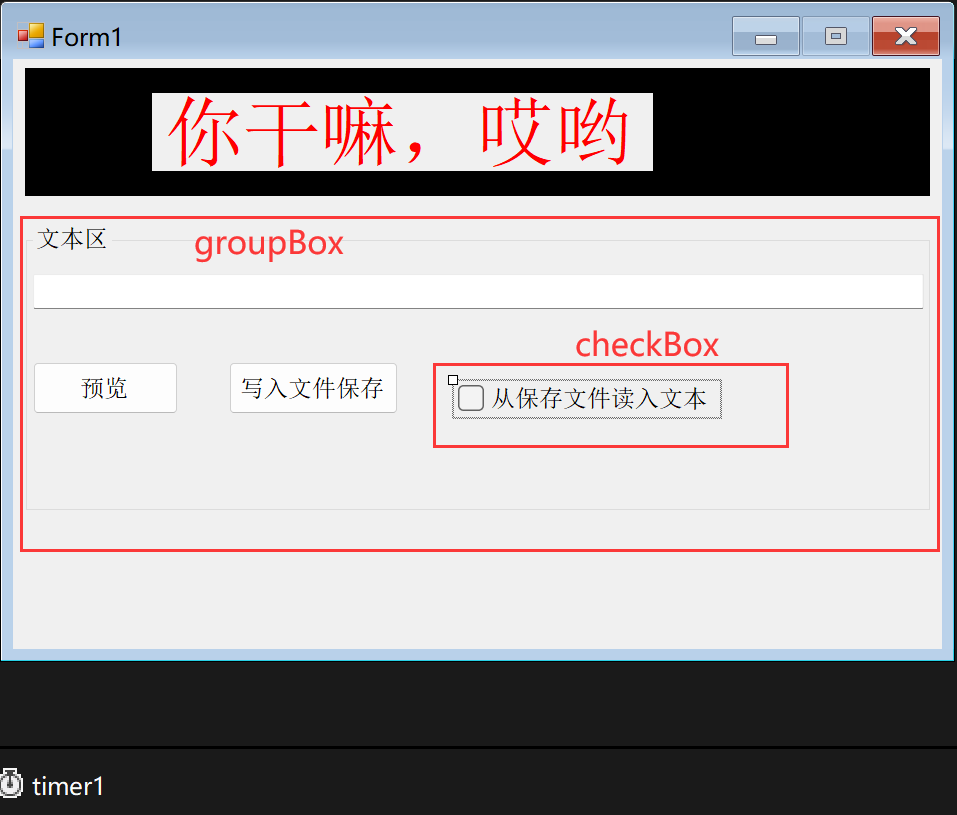
首先设置从属关系
private void Form1_Load(object sender, EventArgs e)
{
// 将label1设置为label2的父窗体
// 通过将label2的背景色设置为Transparent，跟随label1窗体背景颜色
label2.Parent = label1;
}- 接着启用
timer控件，让label2在label1中动起来
private void timer1_Tick(object sender, EventArgs e)
{
// 边界判断
if (label2.Left < -label2.Width)
{
label2.Left = label1.Width;
}
label2.Left -= 10;
}- 对于
预览键，点击后，将textBox中输入的文本显示到label2上
private void button1_Click(object sender, EventArgs e)
{
label2.Text = textBox1.Text;
}- 对于
写入文件保存
private void button2_Click(object sender, EventArgs e)
{
// 通过System.IO中的streamwrite类来写入文件
// 构造函数参数传入的是文件保存名称，默认路径在debug文件下
// 该构造函数还有第二个参数，bool，是否追加
StreamWriter sw = new StreamWriter("sw.txt");
// 写入文件
sw.Write(textBox1.Text);
// 写入完成要进行关闭，关闭后才能看到保存的文本
sw.Close();
}- 对于
checkBox 从保存文件读入文本，并将文本内容写入label2
private void checkBox1_CheckedChanged(object sender, EventArgs e)
{
if(checkBox1.Checked)
{
label2.Text = File.ReadAllText("sw.txt");
}
}3.5 掩码规则验证及信息提示
3.5.1 主要内容
maskedTextBox掩码控件mask属性设置掩码格式AsciOnly属性设置是否开启格式验证，若不合格输入不了
toolTip提示控件
3.5.2 实现过程
具体代码见
D:\Program Files\Microsoft Visual Studio\projects\start\Mask界面搭建如下
- 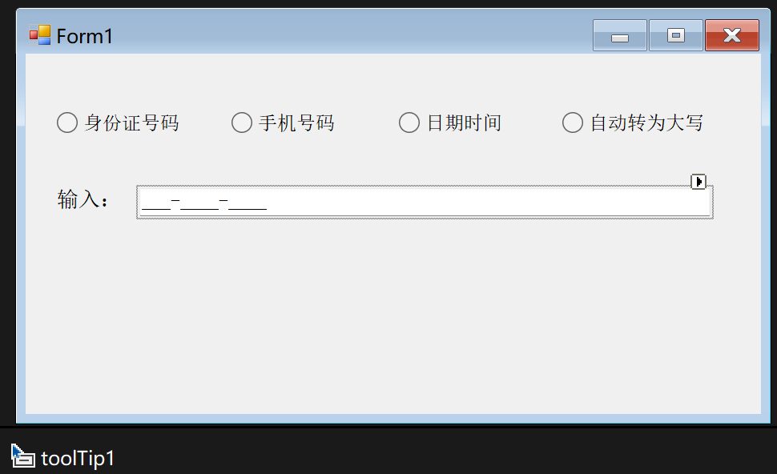
按键切换掩码格式，采用同类型按钮事件
// 同类型按钮事件
// 首先要有同类型控件
// 将同类型控件选择相同的事件
// 通过sender这个object，强制转为指定类型的控件
// 通过转化过来的控件，直接调用某一属性去进行区分
private void radioButton1_CheckedChanged(object sender, EventArgs e)
{
RadioButton rdbt = (RadioButton)sender;
if(rdbt.Text == "身份号码")
{
maskedTextBox1.Mask = "000000-00000000-000A";
}
else if(rdbt.Text == "电话号码")
{
maskedTextBox1.Mask = "000-0000-0000";
}
else if (rdbt.Text == "日期时间")
{
maskedTextBox1.Mask = "0000年90月90日 90时00分";
}
else if (rdbt.Text == "自动转为大写")
{
// 没有该类型掩码
// 自定义掩码：0表示0-9的数字；A代表字母数字都可以；
// ><表示转大小写；L只表示字母
// 指定5位字母
maskedTextBox1.Mask = ">LLLLL";
}
}- 输入提示
private void maskedTextBox1_MaskInputRejected(object sender, MaskInputRejectedEventArgs e)
{
// 当输入不符合规则时提醒
// 提醒输入将超设置长度
if (maskedTextBox1.MaskFull)
{
// 设置提示标题
toolTip1.ToolTipTitle = "啊giao提醒您：";
// 设置提示内容，在相应控件位置显示
// 鼠标必须在控件位置，否则可能失效
toolTip1.Show("输入完成了", maskedTextBox1);
}
// 该条件与前一个情况一样，做例子
else if(e.Position == maskedTextBox1.Mask.Length)
{
toolTip1.Show("已在最后一个位置", maskedTextBox1);
}
else
{
toolTip1.Show("输入不合法", maskedTextBox1);
}
}四、一些有意思的操作
4.1 文件对话框
OpenFileDialog ofd = new OpenFileDialog();
ofd.Title = "请选择音乐文件";
ofd.InitialDirectory = @"C:\Users\echo\Desktop\Music";
ofd.Multiselect = true;
ofd.Filter = "音乐文件|*.wav|所有文件|*.*";
ofd.ShowDialog();4.2 音乐播放
SoundPlayer sp = new SoundPlayer();
sp.SoundLocation = "xxx";
sp.Play();五、VS快捷键
Ctrl+鼠标左键点击函数名：跳转该函数具体定义Ctrl+}：切换光标在代码块标识符{}的位置
六、TCP/IP通信
上位机是客户端，下位机是服务器，客户端发送命令，服务端做出响应
通过
TCP传送接收数据时，必须先使用协议和网络地址信息初始化套接字，然后才能进行通信TCP/IP使用一个网络地址和一个服务端口号来标识唯一设备- 网络地址标识特定的网络目标
- 端口号标识该设备要连接的特定服务
- 网络地址和服务端口的组合称为终结点
- 终结点在
.NET中由EndPoint类表示 - 对于
IP地址类型，类为IPEndPoint
- 终结点在
使用
System.Net.Sockets时，将网络终结点表示为IPEndPoint对象IPEndPoint使用IPAddress及其端口号构造实例- 在使用
Socket发起对话前，在应用和远程目标之间创建数据通道
6.1 进程
进程是操作系统中的一个执行实例
进程是程序的一次执行过程，是一个程序与其关联数据以及系统资源的总称
它是计算机系统进行资源分配和调度的基本单位，可以看作是程序的运行实体
打开软件
// 打开edge浏览器，并跳转相应网页
Process.Start("msedge","https://www.baidu.com")
// 打开微信
Process.Start("weixin://")- 打开文件
ProcessStartInfo psi = new ProcessStartInfo("文件路径");
Pocess p = new Process();
p.StartInfo = psi;
p.Start();6.2 线程
- 线程是进程内的一个独立执行流，是操作系统调度的基本单位
- 一个进程可以包含多个线程，它们共享进程的资源，但拥有各自的执行路径和局部变量
- 线程是轻量级的执行单元，相比于进程，线程的创建、销毁和切换成本更低
- 程序任何动作的响应都是由线程完成的
6.2.1 主要函数
- 线程主要函数分别是
Start()和Abort()Start()：告诉cpu线程已经准好了，可以随时被执行，但是具体执行时间由cpu决定Abort()：终止线程
- 其余方法
Thread.Sleep(1)：静态方法，使线程停止一段时间
6.2.2 关于线程的一些问题
进程与线程的关系？
- 一个进程包含多个线程
线程分类
- 前台线程和后台线程，我们使用后台线程
==为什么要用多线程？==
因为单线程容易造成程序假死
如，Form窗体中只有一个button1
// 按下button1后，调用test()
// 此时主线程去控制台执行Console.WriteLine()了
// 若test()没有执行完，Form窗体会卡死，无法拖动或执行其他操作
private void button1_Click(object sender, EventArgs e)
{
test();
}
public void test()
{
for(int i = 0; i<1000000; i++)
{
Console.WriteLine(i);
}
}通过==线程调用函数==的一些注意事项
- 无参函数
// 通过线程调用无参函数
private void button1_Click(object sender, EventArgs e)
{
Thread th = new Thread(Test);
// 开启后台进程，其会在前台进程结束后 自动终止，不会等待后台进程执行完毕
th.IsBackground = true;
th.Start();
}
public void test()
{
for(int i = 0; i<1000000; i++)
{
Console.WriteLine(i);
}
}- 有参函数
// 对于有参函数
// 形参的类型必须是 Object
// 线程调用传参，通过对 Start() 写入实参进行传递
private void button1_Click(object sender, EventArgs e)
{
Thread th = new Thread(Test);
th.IsBackground = true;
th.Start("123");
}
public void test(object s)
{
string ss = string(s)
for(int i = 0; i<1000000; i++)
{
Console.WriteLine(i);
}
}跨线程调用控件
- 要想跨线程调用控件，可以通过取消程序的跨线程检查实现
Control.CheckForIllegalCrossThreadCalls = false;- 3个label，1个button
bool b = false;
private void Form1_Load(object sender, EventArgs e)
{
// 取消跨线程检查，实现控件的跨线程调用
Control.CheckForIllegalCrossThreadCalls = false;
}
private void button1_Click(object sender, EventArgs e)
{
if(b == false)
{
b = true;
button1.Text = "停止";
Thread th = new Thread(PlayGame);
th.IsBackground = true;
th.Start();
}
else
{
b = false;
button1.Text = "开始";
}
}
private void PlayGame()
{
Random r = new Random();
while (b)
{
// 若没有取消跨线程检查，此处会报错
label1.Text = r.Next(0, 9).ToString();
label2.Text = r.Next(0, 9).ToString();
label3.Text = r.Next(0, 9).ToString();
}
}
6.2.3 多线程
- 多个执行流同时运行
- 实际还是单线程，但对CPU进行了时间切片，在每个时间片内执行一个线程
- 如何实现多线程？
- 基于委托异步实现
ThreadThreadPoolTaskTaskFactoryParallel并行编程
6.2.3.1 基于委托的异步编程
异步编程是建立在委托的基础上
异步调用的每个方法，都是在独立的进程中执行的
异步编程是多线程的一种，可以说是简化的多线程
什么时候使用异步？
- 比较适合在后台耗费时间较长，但任务简单且各任务间相互独立的情况
如果后台要求访问共享资源，并且要按照某种顺序执行，此时异步不适合，应该采用其他多线程去完成
D:\Program Files\Microsoft Visual Studio\projects\异步-多线程\多线程\Study1
6.2.3.1.1 示例
- 先声明一个
random对象
// 后续模拟线程耗时
// 多线程环境或需要长期保持随机数序列不变的情况下，通常建议将其声明为 static
private static Random random = new Random();- 基于
Func<>定义匿名委托
// 基于委托求一个数的平方
// 该委托输入参数为 num，输出结果为 num*num
private Func<int, int> Operation = (num) =>
{
// 模拟耗时，使当前进程暂停
Thread.Sleep(random.Next(5) * 1000);
return num * num;
};- 定义回调方法
AutoCallBack()
// 回调函数
// 通过 IAsyncResult.AsyncState 可获取传递给异步操作的标识参数
// 通过 Operation.EndInvoke() 获取异步操作的结果
private void AutoCallBack(IAsyncResult result)
{
int res = Operation.EndInvoke(result);
Console.WriteLine($"第{result.AsyncState}个计算结果是{res}");
}- 启动多线程
private void btnExec_Click(object sender, EventArgs e)
{
for(int i =1; i < 11; i++)
{
// 异步
// 通过循环将 10 个任务同时发布出去
// 各自执行，互不影响
// 参数中的回调函数，是当该异步任务执行完成后，需要自动调用的方法
// 启动异步任务，每个任务会执行 Operation 委托，并传入参数 i*10
// Operation 委托执行完成后，调用 AutoCallBack 回调方法，并传入标识参数 i
Operation.BeginInvoke(i * 10, AutoCallBack, i);
}
}6.2.3.1.2 一些问题
Operation.BeginInvoke(i*10,AutoCallBack,i);中的标识参数i有什么用？- 将不同的
i传递给异步操作，标识线程，以便在异步操作完成后能够在回调函数中识别是哪个线程完成了
- 将不同的
int res = Operation.EndInvoke(result);怎么理解？result是传入的标识参数i，EndInvoke()通过使用该标识去获取对应线程的运行结果
6.2.3.2 基于Thread多线程
D:\Program Files\Microsoft Visual Studio\projects\异步-多线程\多线程\Threads
6.2.3.2.1 跨线程调用控件
前面记
Thread，此处新增==跨线程调用控件==的方法Control.CheckForIllegalCrossThreadCalls = false;取消跨线程检测，尽量不用主要代码
// Control.Invoke() 实现跨线程调用
// Control.InvokeRequired 该属性在 Control 不是UI线程时为 true；反之，为 false
if (this.lalResult1.InvokeRequired)
{
this.lalResult1.Invoke(
new Action<string>(s => { this.lalResult1.Text = s; }),
num.ToString() );
}- 示例代码
private void btnExecute1_Click(object sender, EventArgs e)
{
// 任务一
int num = 0;
Thread thread = new Thread(() =>
{
for(int i = 1; i < 20; i++)
{
num += i;
// 跨线程调用控件
if (this.lalResult1.InvokeRequired)
{
this.lalResult1.Invoke(
new Action<string>(s => { this.lalResult1.Text = s; }),
num.ToString() );
}
Thread.Sleep(300);
}
});
thread.IsBackground = true; // 设置为后台线程
thread.Start();
// 关于前台线程和后台线程：
// 一个程序如果有前台线程，必须在所有的前台线程都结束后，才能退出
// 一个程序如果开启的都是后台线程，则程序关闭后，后台线程就会自动全部退出
}
private void btnExecute2_Click(object sender, EventArgs e)
{
Thread th = new Thread(() =>
{
for(int i = 1;i < 20; i++)
{
if (this.lalResult2.InvokeRequired)
{
this.lalResult2.Invoke(
new Action<string>(s => { this.lalResult2.Text = s; }),
i.ToString());
}
Thread.Sleep(i*100);
}
});
th.IsBackground = true;
th.Start();
}
private void btnRead_Click(object sender, EventArgs e)
{
Thread th = new Thread(() =>
{
if (this.txtV.InvokeRequired)
{
this.txtV.Invoke(new Action<string>(s => { this.lalV.Text = s; }),
txtV.Text);
//Thread.Sleep(100);
}
});
th.IsBackground = true;
th.Start();
}6.2.3.2.2 跨控件访问数据库
D:\Program Files\Microsoft Visual Studio\projects\异步-多线程\多线程\ThreadDataBase
先把数据库学了来！！！！！
6.3 Socket
6.3.1 关于Socket的一些问题
怎么理解Socket
- 人通过 电话 进行通信，==程序通过 Socket 来通==，套接字就是程序间的电话机
- Socket是进程通信机制，也称作“套接字”，用于描述IP地址和端口，是一个通信链的句柄，是两个程序间通信用的
- Socket类型
- 流式Socket（STREAM）：一种面向连接的Socket，针对TCP服务应用，安全，但是效率低
- 数据报式Socket（DATAGRAM）：一种无连接Socket，对应于UDP服务应用，不安全（丢失，顺序紊乱，在接收端要分析重排及要求重发），但效率高
- 以电话网为例，电话的通话双方相当于通信的2个程序，电话号码就是IP地址。任何用户在通话前，首先要占有一部电话机，相当于申请一个Socket；同时要知道对方的号码，对方也得有一部电话，即一个Socket。然后向对方拨号呼叫，相当于发出连接请求。对方假如在场并空闲，拿起电话话筒，双方就可以进行正式通话，相当于连接成功。双方通话的过程，是一方向电话机发出信号，和对方从电话机接收信号的过程，相当于向Socket发送数据和从Socket接收数据。通话结束后，一方挂起电话机，相当于关闭Socket，撤销连接。
- 关于端口，客户端与服务器使用IP地址建立联系，而客户端只需要与服务器中的某一个程序进行连接，在服务器中使用端口号标记各程序。
Socket一般==应用模式==（服务端和客户端）
- 服务端 welcoming Socket 监听端口，检测客户端的连接请求
- 客户端 client Socket 连接服务端指定端口，并用于接收和发送 服务端消息
- 服务端 welcoming Socket 监听到客户端连接，创建 connection Socket，实现与客户端的通信
- 以男生去女生宿舍找女同学为例，男生要想找到女生宿舍得某一个的女生，首先要找到宿管大妈，告诉大妈找人的原因（如生病了来看望女同学），宿管大妈再去找到并通知对应的女生，进而建立男生与女生之间的联系。过程中，男生相当于客户端，宿管阿姨扮演负责监听的Socket，女生相当于服务端里的应用程序，当男生发出请求，宿管阿姨就创建一个负责通信的Socket，用于男生和女生通信
Socket中的==端口==
- Internet上有很多主机，每台主机同时运行了多个服务软件，提供多种服务，每种服务都打开一个Socket，并绑定到一个端口上，不同的端口对应于不同的服务。例如，http使用80端口，ftp使用21端口，smtp使用25端口
什么是==协议==
我和ikun打电话，中文是规定好的语言，电脑与电脑进行联系就需要协议
TCP协议，有三次握手，要求必须要有服务器，请求必须由客户端发起，因为服务器不知道客户端在哪。三次握手的过程：首先客户端给服务器发送消息“你有空吗？”，服务器收到客户端的消息后，回复“我有空”，最后客户端再给服务器发送消息“我知道你有空了”。只有完成三次握手连接上后，客户端才跟服务器相收发数据，否则不会进行数据的沟通。所以TCP协议安全、稳定、但是效率低（需要花时间去握手）

UDP协议，快速，效率高，但是不稳定，容易发生数据丢失，客户端不管服务器是否有空，直接把消息发送到服务器，当服务器繁忙的时候不能即使对接收到的数据进行处理，进而造成数据丢失
两种协议各有好坏，视频传输使用的就是UDP协议
6.3.2 Socket通信流程
Socket通信流程图

服务端
Bind()：负责绑定监听端口；Listen()：设置监听队列：Accept()：放循环中，等待客户连接
6.3.2.1 服务端
- 创建一个负责监听的Socket
// 创建监Socket，初始化地址簇、套接字类型、协议类型
Socket socketWatch = new Socket(AddressFamily.InterNetwork, SocketType.Stream, ProtoolType.Tcp);
// 让 socketWatch 监听所有网络接口的连接请求
IPAdress ip = IPAdress.Any;
// 创建终结点
IPEndPoint point = new IPEndPoint(ip, Convert.ToInt32(txtPort.Text));
// socketWatch 绑定指定的终结点
socketWatch.Bind(point);
// 设置并发连接数，监听队列长度
socketWatch.Listen(10);- 开启线程等待连接，连接成功后，创建通信socket
// 调用的自定义的 Listen 函数
Thread th = new Thread(Listen);
th.IsBackground = true;
th.start(scoketWatch);
// 将 socketSend 设置为全局变量
Socket socketSend;
private void Listen(object o)
{
socket socketWatch = o as socket;
// socketWatch 循环监听连接请求
while(true)
{
// Accept()是一个 阻塞 方法
// 有客户端请求连接时，返回一个新的 Socket，表示与客户端建立了连接
// 创建一个用于通信的 Socket
socketSend = socketWatch.Accept();
// 连接成功后，可进行一些内部处理
// 如开启线程，接收客户端数据
Thread th = new Thread(Receive);
th.IsBackground = true;
th.Start(socketSend);
}
}- 当发生跨线程调用控件时，可在窗体加载时 关闭跨线程检查
Controls.CheckForIllegalCrossThreadCalls = false;- 服务器接收数据
private void Receive(object o)
{
socket socketSend = o as socket;
try
{
// 循环接收数据，知道把数据接收完
while(true)
{
byte buffer = new byte[1024 * 1024 * 3];
// 当 buffer 长度小于待接收的数据时，截取满buffer长度，就进行阶段，等待继续下次接收
int r = socketSend.Receive(buffer);
// 当数据接收完
if(r == 0)
{
break;
}
// 将 buffer 解码为字符串
// string str = Encoding.UTF8.GetString(buffer);
}
catch
{
}
}
}- 服务器发送数据
// 以按键点击发送数据为例
private void btnSend_Click(object sender, EvenArgs e)
{
string str = txtSend.Text;
byte[] buffer = Encoding.UTF8.GetBytes(str);
// 此处 socketSend 为前面创建的全局变量
socketSend.Send(buffer);
}6.3.2.2 客户端
- 创建客户端Socket，并连接指定终结点
// 做全局变量
Socket socketSend;socketSend = new Socket(AddressFamily.InterNetwork, SocketType.Stream, ProtocolType.Tcp);
IPAdress ip = IPAdress.Parse(txtServer.Text);
IPEndPoint point = new IPEndPoint(ip, Convert.ToInt32(txtPort.Text));
socketSend.Connect(point);- 客户端接收消息
private void Receive()
{
while(true)
{
byte[] buffer = new byte[1024 * 1024 * 3];
int r = socketSend.Receive(buffer);
if(r == 0)
{
break;
}
string str = Encoding.UTF8.GetString(buffer);
}
}- 客户端发送消息
// 同样以按键点击发送消息
private btnSend_Click(object sender, EventArgs e)
{
string str = txtMsg.Text.Trim();
byte[] buffer = Encoding.UTF8.GetBytes(str);
socketSend.Send(buffer);
}6.4.3 基于Socket的聊天程序
6.4.3.1 实现功能
- 传送文件
- 判断接收数据是文件还是文字
- 设计协议
- 在传递的字节数组前加上一个字节作为标识：0表示文字，1表示文件
- 文字：0 + 字节数组
- 文件：1 + 文件二进制信息
6.4.3.2 服务器
- 创建
socketWatch监听连接
private void btnStart_Click(object sender, EventArgs e)
{
try
{
Socket socketWatch = new Socket(AddressFamily.InterNetwork, SocketType.Stream, ProtocolType.Tcp);
IPAddress ip = IPAddress.Any;
int port = Convert.ToInt32(txtPort.Text);
IPEndPoint point = new IPEndPoint(ip, port);
socketWatch.Bind(point);
showMsg("开始监听");
socketWatch.Listen(10);
Thread th = new Thread(Accept);
th.IsBackground = true;
th.Start(socketWatch);
}
catch
{
}
}- 接收客户端连接，并开启
Receive线程
Socket socketServer = null;
private void Accept(object socketWatchObj)
{
Socket socketWatch = (Socket)socketWatchObj;
while (true)
{
try
{
socketServer = socketWatch.Accept();
showMsg(socketServer.RemoteEndPoint.ToString() + " 连接成功");
Thread th = new Thread(Receive);
th.IsBackground = true;
th.Start();//(socketServer);
}
catch
{
}
}
}- 打印信息
private void showMsg(string str)
{
txtLog.AppendText(str+"\r\n");
}- 接收数据
private void Receive()//(object socketServerObj)
{
//Socket socketServer = socketServerObj as Socket;
while (true)
{
try
{
byte[] buffer = new byte[1024 * 1024 * 3];
int num = socketServer.Receive(buffer);
if (num == 0)
{
showMsg("与客户端连接中断");
break;
}
string str = Encoding.UTF8.GetString(buffer, 0, num);
showMsg(socketServer.RemoteEndPoint.ToString() + " " + str);
}
catch
{
}
}
}- 发送文本数据
private void btnSend_Click(object sender, EventArgs e)
{
string str = txtMsg.Text;
byte[] buffer = Encoding.UTF8.GetBytes(str);
// 数组长度不可变
// 使用 List 来增加协议标识，并转为 数组
List<byte> list = new List<byte>();
list.Add(0);
list.AddRange(buffer);
byte[] newBuffer = list.ToArray();
socketServer.Send(newBuffer);
txtMsg.Clear();
}- 选择并发送文件
private void btnSelect_Click(object sender, EventArgs e)
{
OpenFileDialog ofd = new OpenFileDialog();
ofd.InitialDirectory = @"";
ofd.Title = "请选择要发送的文件";
ofd.Filter = "所有文件|*.*";
ofd.ShowDialog();
txtPath.Text = ofd.FileName;
}
private void btnSendFile_Click(object sender, EventArgs e)
{
// 获取发送文件的路径
string path = txtPath.Text;
using (FileStream fsRead = new FileStream(path, FileMode.Open, FileAccess.Read))
{
byte[] buffer = new byte[1024 * 1024 * 5];
int r = fsRead.Read(buffer, 0, buffer.Length);
List<byte> list = new List<byte>();
list.Add(1);
list.AddRange(buffer);
byte[] newBuffer = list.ToArray();
socketServer.Send(newBuffer,0,r+1,SocketFlags.None);
}
}6.4.3.3 客户端
- 连接服务器
private void btnConnect_Click(object sender, EventArgs e)
{
try
{
socketClient = new Socket(AddressFamily.InterNetwork, SocketType.Stream, ProtocolType.Tcp);
IPEndPoint point = new IPEndPoint(IPAddress.Parse(txtIP.Text), Convert.ToInt32(txtPort.Text));
socketClient.Connect(point);
showMsg(socketClient.RemoteEndPoint.ToString() + " 连接成功");
Thread th = new Thread(Receive);
th.IsBackground = true;
th.Start();
}
catch
{
}
}- 打印信息
private void showMsg(string str)
{
txtLog.AppendText(str + "\r\n");
}- 接收消息
private void Receive()//(object socketClientObj)
{
// Socket socketClient = socketClientObj as Socket;
while (true)
{
try
{
byte[] buffer = new byte[1024 * 1024 * 3];
int num = socketClient.Receive(buffer);
if (num == 0)
{
showMsg("断开连接");
break;
}
// 根据标识执行对应动作
// 文字消息
if (buffer[0] == 0)
{
string str = Encoding.UTF8.GetString(buffer, 1, num-1);
showMsg(socketClient.RemoteEndPoint.ToString() + " " + str);
}
else if (buffer[0] == 1)
{
SaveFileDialog sfd = new SaveFileDialog();
sfd.InitialDirectory = @"";
sfd.Title = "请选择要保存的文件";
sfd.Filter = "所有文件|*.*";
sfd.ShowDialog(this);
string path = sfd.FileName;
using(FileStream fsWrite = new FileStream(path, FileMode.OpenOrCreate, FileAccess.Write))
{
fsWrite.Write(buffer, 1, num-1);
}
MessageBox.Show("保存成功");
}
}
catch
{
}
}
}- 发送消息
private void btnSend_Click(object sender, EventArgs e)
{
string str = txtMsg.Text;
byte[] buffer = Encoding.UTF8.GetBytes(str);
socketClient.Send(buffer);
txtMsg.Clear();
}6.4 委托
6.4.1 关于委托的一些问题
- 为什么要使用委托
- 为了将一个方法作为参数传递给另一个方法，此时传递的的方法应是委托类型
- ==注意==
- 委托所指向的函数必须与委托具有相同的签名
- 委托声明放在
class外，namespace内
6.4.2 委托的使用
6.4.2.1 基本使用
- 有两个签名一致的函数
public static void SayHiChinese(string name)
{
Console.WriteLine("早上好" + name);
}
public static void SayHiEnglish(string name)
{
Console.WriteLine("Nice to meet you " + name);
}- 声明委托，委托需要与函数签名一致
public delegate void DelSayHi(string name);使用委托
- new 声明
DelSayHi del = new DelSayHi(SayHichinese);
del("张山");- 赋值
// 直接赋值
DelSayHi del = SayHiChinese;
del("张山");// 传参赋值
Test("张山", SayHiChinese);
public static void Test(string name, DelSayHi del)
{
del(name);
}6.4.2.2 匿名函数
当某个方法只需要执行一次的时候，可用将方法写成匿名函数
以前文代码为例
// 当只需要中文的问好时
// 可删掉 SayHiChines()，减少代码量
DelSayHi del = delegate(string name)
{
Console.WriteLine("早上好"+name);
};
// 前几行代码也可以写为 lambda表达式
// 参数指向方法体
DelSayHi del = (string name) => {Console.WriteLine("早上好"+name);};6.4.2.3 泛型委托
求任意数组的最大值（int[] 为数值最大，string[] 为长度最长）
初始代码
// 返回 int 最大值
public static int GetMax(int[] nums)
{
int max = nums[0];
for(int i = 0; i < nums.Length; i++)
{
if(max < nums[i])
{
max = nums[i];
}
}
return max;
}
// 返回 string 最长字符串
// 函数重载
public static string GetMax(string[] names)
{
string max = names[0];
for(int i = 0; i < names.Length; i++)
{
if(max.Length < names[i].Length)
{
max = names[i];
}
}
return max;
}- 为减少代码量，将两个方法使用**
object替换**一个方法，并使用委托作为if的判断条件
// 声明一个委托去处理判断条件的真假
// 委托的返回值为 int
// 参数与 GetMax 一致，使用 object
public delegate int DelCompare(object o1, object o2);public static object GetMax(object[] nums, DelCompare del)
{
object max = nums[0];
for(int i = 0; i < nums.Length; i++)
{
// 传一个比较方法
if(del(max, nums[i]) < 0)
{
max = nums[i];
}
}
return max;
}// 根据委托签名书写调用的比较函数
// int类
public static int Compare1(object o1, object o2)
{
int n1 = (int)o1;
int n2 = (int)o2;
return n1 - n2;
}
// string类
public static string Compare2(object o1, object o2)
{
string s1 = (string)o1;
string s2 = (string)o2;
return s1.Length - s2.Length;
}// Main方法
public static void Main(string[] args)
{
// 比较 int
object o1 = {1, 2, 3, 4, 5};
object result1 = GetMax(o1, Compare1);
Console.WriteLine(result1);
// 比较 string
object o2 = {"qwhdaj", "gakddnajdhowiud"};
object result2 = GetMax(o2, Compare2);
Console.WriteLine(result2);
}- 使用
object类型涉及 装箱拆箱 ，继续使用 泛型 减少代码量
// 使用泛型委托
public static int DelCompare<T>(T o1, T o2);// 修改前文 public static object GetMax(object[] nums, DelCompare del)
public static T GetMax<T>(T[] nums, DelCompare<T> del)
{
T max = nums[0];
for(int i = 0; i < nums.Length; i++)
{
if(del(max, nums[i]) < 0)
{
max = nums[i];
}
}
return max;
}public static int Compare1(int o1, int o2)
{
return o1 - o2;
}// Main函数
public static void Main(string[] args)
{
// int 类
int[] nums = {1, 2, 3, 4, 5};
int max = GetMax<int>(nums, Compare1);
Console.WriteLine(max);
// string 类
string[] names = {"hdakd", "hsadopjadlja"};
string result = GetMax<string>(names, (string s1, string s2) => {
return s1.Length - s2.Length;});
COnsole.WriteLine(result);
}6.4.2.4 Lambda表达式
Lambda表达式本质上还是匿名函数
DelCompare del = (string name) => {Console.WriteLine(name)};List<int> list = new List<int>(){1, 2, 3, 4, 5, 6, 7};
// 将 大于4 的全部删除
list.RemoveAll(n => n>4);
foreach(var item in list)
{
Console.WriteLine(item);
}6.5 事件
6.5.1 关于事件的一些问题
- ==委托与事件的区别==
- 委托是对方法的引用，而事件是一种特殊的委托，用于实现观察者模式，方便对象在状态变化时通知其他对象
- 委托不安全，事件的本质是一个安全的委托
- 委托在哪都可以调用，而事件只能在类内进行调用
- 委托是一种类型，事件是基于委托的一种机制，通过”Event”关键字进行声明
- 委托允许直接调用委托实例所引用的方法，而事件只能通过”+=“和”-=“来添加移除事件处理程序
- 实际应用时，事件能够提供更灵活的机制来处理对象间的通信
6.5.2 事件的使用
6.5.2.1 基本使用
以按键播放音乐为例
创建
PlayMusic类，并在其中定义委托事件
// 声明事件之前要先创建委托
public delegate void DelPlayOver();
internal class PlayMusic
{
// 声明事件
// 若没有event，那么public DelPlayOver Del;就是委托
public event DelPlayOver Del;
// 音乐名
public string Name{get;set;}
public PlayMusic(string name)
{
this.Name = name;
}
// 播放音乐
public void PlaySongs()
{
Console.WriteLine("正在播放" + this.Name);
// 模拟播放耗时
Thread.Sleep(3000);
if(Del != null)
{
// 执行对应事件
Del();
}
}
}- 绑定事件，并执行相应方法
private void button1_Click(object sender, EventArgs e)
{
PlayMusic p = new PlayMusic("哈哈哈哈哈");
// 注册事件
// 委托在调用方法时，p.Del = Test;
p.Del += Test;
p.PlaySongs();
}
// 事件绑定方法
public void Test()
{
Console.WriteLine("播放完成了！！！");
}6.6 关于文件
6.6.1 File 类
- 用于==读小文件==，因为
File类是一下读完问文本，所以在读大文件会对内存造成较大的负荷
6.6.1.1 基本操作
- 创建文件
File.Create(@"C:\Users\echo\Desktop\new.txt");- 删除文件
File.Delete(@"C:\Users\echo\Desktop\new.txt");- 复制文件
File.Copy(@"C:\Users\echo\Desktop\old.txt",@"C:\Users\echo\Desktop\new.txt");- 剪切文件
File.Move(@"C:\Users\echo\Desktop\old.txt",@"C:\Users\echo\Desktop\new.txt")6.6.1.2 读取文本
ReadAllBytes()可读取任何文件（文本、图片、音乐等），需要转为字节；后两个方法ReadAllLines()和ReanAllText()，只能读文本文件将文本读取为字节
byte[] buffer = File.ReadAllBytes(@"C:\Users\echo\Desktop\old.txt");
// 字节看不懂，转为字符串
// GetEncoding()，指定编码格式
string s = Encoding.GetEncoding("GB2312").GetString(buffer);- 按行读取
// 按行读取，返回字符串数组
string[] contents = File.ReadAllLines(@"C:\Users\echo\Desktop\old.txt",Encoding.Deffault);
foreach(string item in contents)
{
Console.WriteLine(item);
}- 全部读完
// 一下读完，返回一个string
string str = File.ReanAllText(@"C:\Users\echo\Desktop\old.txt",Encoding.Deffault);
Console.WriteLine(str);6.6.1.3 写入文本
- 覆盖写入字节
// 读取时，如果没有对应文件，会自行创建；有的话，进行覆盖
// 将字符串转为字节存储到文件中
string str = "你干嘛哎哟";
// Default 默认编码
byte[] buffer = Encoding.Default.GetBytes(str);
File.WriteAllBytes(@"C:\Users\echo\Desktop\new.txt",buffer);
- 覆盖按行写入
string[] str = new string[] {"sdf","jklj"};
File.WriteAllLines(@"C:\Users\echo\Desktop\new.txt",str);
- 覆盖全部写入
string str = "gakjfhlahfl";
File.WriteAllText(@"C:\Users\echo\Desktop\new.txt",str);- 追加写入
File.AppendAllText();
File.AppendAllLines();
File.AppendText();6.6.2 编码简介
- 文本文件编码，文本文件有不同的存储方式，将字符串以特定的形式保存为二进制就是编码
- 编码有
UTF8（web）、ASCII（字母、数字、音标）、Unicode（包含各种字体，但是解析慢）、GB2312（简体字）、Big5（简体 + 繁体字） Unicode = UTF7 + UTF8 + UTF32
- 编码有
- 文本乱码原因
- 产生乱码的原因是 保存文件 时所采用的编码格式与 打开文件 时的编码格式不一样
6.6.3 FileStream 类
- 读取文件时，是一点一点去读，不会对内存造成压力
FileStream用于==操作字节==FileStream不会被垃圾回收机制处理，需要手动释放流所占用的内存
6.6.3.1 读取
- 读小文件
// 创建FileStream对象
// FileMode：对文件要进行的操作
// FileAccess；对文本内容要进行的操作
FileStream fsRead = new FileStream(@"C:\Users\echo\Desktop\new.txt",FileMode.OpenOrCreate,FileAccess.Read);
// 创建 byte[] 去接收读取到的字节信息
byte[] buffer = new byte[1024 * 1024 * 5];
// 返回实际 读取到的有效字节数
int r =fsRead.Read(buffer,0,buffer.Length);
// 将字节数组中每一个元素按照指定编码格式解码为字符串
string s = Encoding.Default.GetString(buffer,0,r);
// 关闭流，释放流所占用的资源
fsRead.Close();
fsRead.Dispose();
6.6.3.2 写入
- 自动释放流的写法
// 自动释放流
using(FileStream name = new FileStream())
{
}using(FileStream fsWrite = new FileStream(@"C:\Users\echo\Desktop\new.txt",FileMode.OpenOrCreate,FileAccess.Write))
{
string str = "oaflalfjklaj";
byte[] buffer = Encoding.Default.GetBytes(str);
fsWrite.Write(buffer,0,buffer.Length);
}6.6.3.3 基于FileStream的多媒体文件复制
CopyFile方法
// 传入源文件路径、复制文件路径
public static void CopyFile(string source,string target)
{
// 首次创建一个负责读取的流
using (FileStream fsRead = new FileStream(source,FileMode.Open,FileAccess.Read))
{
// 创建写入流
using (FileStream fsWrite = new FileStream(target,FileMode.OpenOrCreate,FileAccess.Write))
{
byte[] buffer = new byte[1024 * 1024 * 5];
// 因为文件可能会比较大，所以循环读取
while (true)
{
// Read：读取相应字节长度，然后将文件流的位置移动到已读取位置之后
int r = fsRead.Read(buffer, 0, buffer.Length);
// 读取完成
if(r == 0)
{
break;
}
// 追加写入
fsWrite.Write(buffer, 0, r);
}
}
}
}Main()方法
static void Main(string[] args)
{
string source = @"C:\Users\echo\Desktop\Music\解解的神仙现场 - 海阔天空 - 邓紫棋 (2023时光音乐会老友记现场).wav";
string target = @"C:\Users\echo\Desktop\解解的神仙现场.wav";
CopyFile(source, target);
Console.WriteLine("复制成功");
}6.6.4 StreamReader和StreamWriter
- 操作字符、文本
6.6.4.1 StreamReader
using (StreamReader sr = new StreamReader(@"C:\Users\echo\Desktop\解解的神仙现场.txt", Encoding.Default))
{
// 当没有读到文本末尾，循环打印读取到的行
while (!sr.EndOfStream)
{
Console.WriteLine(sr.ReadLine());
}
}6.6.4.2 StreamWriter
// 不存在的文件，会自行创建
using (StreamWriter sw = new StreamWriter(@"C:\Users\echo\Desktop\new.txt",true))
{
// 会覆盖源文本
// 添加一个 true 后，不会进行覆盖
sw.WriteLine("你赶紧的卡");
}七、SQL数据库
- 存储数据的仓库
- 增删改查
7.1 SQLServer使用
7.1.1 创建登录名
创建
SQL Server身份，设置用户名和密码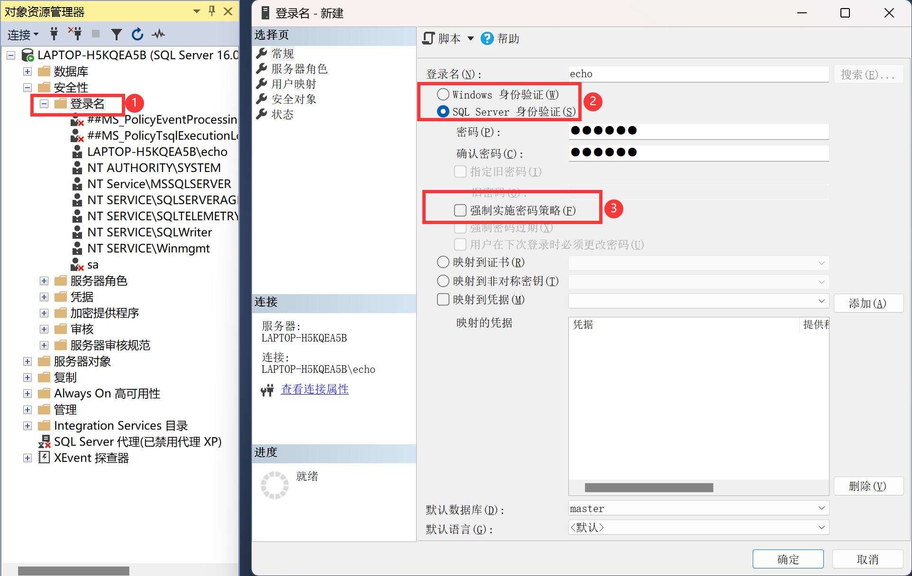服务器角色，服务器名最大权限为sysadmin，要作为管理员身份对数据库进行使用，可以将其勾选上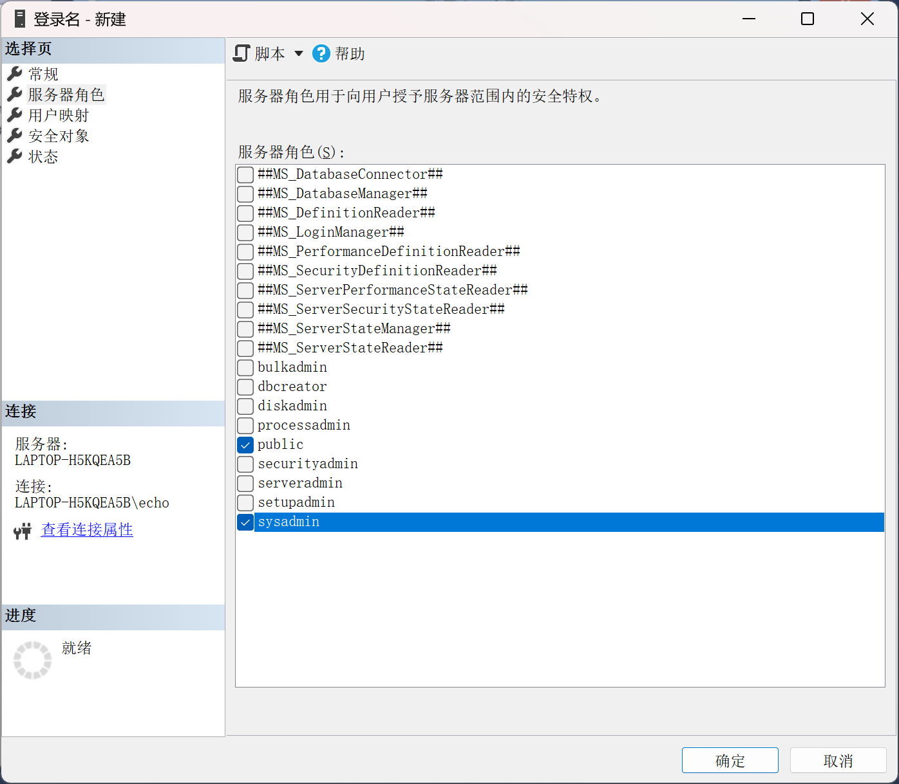带 × 的账户，可通过
双击，并将强制实施密码策略取消勾选，并将状态/登录名勾选为启动
7.1.2 登录SQL账户
创建好登录名后，首先修改
服务器身份验证，选中服务器，右键属性，点击安全性，勾选SQL Server 和 Windows 身份验证模式然后电脑底部搜索框搜索
SQL，进入SQL Server 网络配置，进入MSSQLSERVER 的协议，启用Named Pipes和TCP/IP再选中
服务器名称，右键选择重新启动，进行SQL 账户登录若二次登录，出现==无法连接==的情况
安装完SQL Server后,解决本地服务器连接失败的方法(仅供参考)_sql server连不上本地服务器-CSDN博客
此电脑 –> 右键-管理 –> 服务与应用程序-服务 –> SQL Server(MSSQLSERVER) –> 右键-启动
7.1.3 创建数据库
- 选中
数据库文件夹，右键新建数据库 - 设置
数据库名称，自动生成数据库文件（数据文件 和 日志文件） - 对于两个数据库文件，可以自定义
初始大小（初始内存），并设置增长大小（当文件内容长度超过初始大小后，自动增加内存），另外可更改 数据库文件存放路径 - 如，建立一个名为 SQL学习测试 的数据库，初始内存大小及增长 使用默认参数，文件路径改为 D:\Program Files\Microsoft SQL Server\学习测试\数据库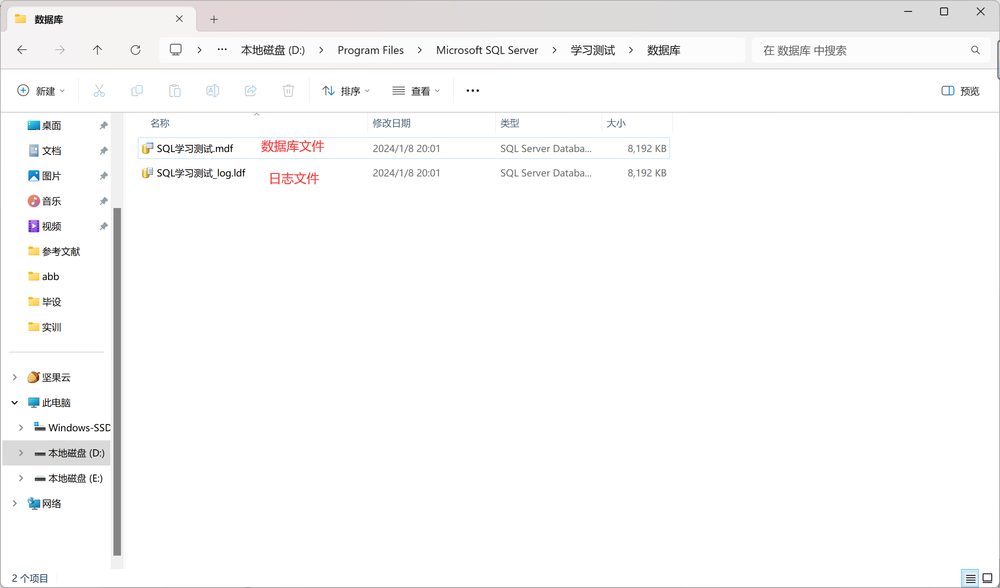
7.1.4 删除数据库
==删除数据库文件==，直接删除是删除不了的，因为数据库有一个监听端口，创建一个数据库就会自动建立一个监听连接，数据库被管理起来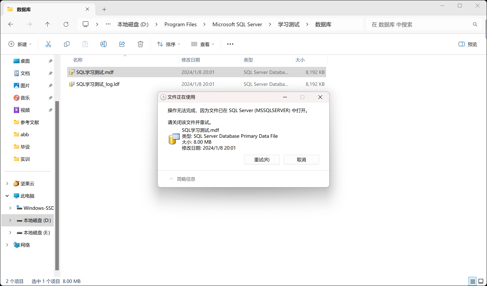
若要删除，首先选中 数据库 文件夹，右键
任务 -> 分离，并勾选删除连接，点击确认，移除该数据库
移除之后，便可对两个
数据库文件进行删除
7.1.5 还原数据库
- 若
数据文件还存在，通过选中数据库，右键附加，然后添加，选择.mdf文件，确认即可还原
7.1.6 新建表
选中
数据库下的表文件夹，右键新建 -> 表，设置列名等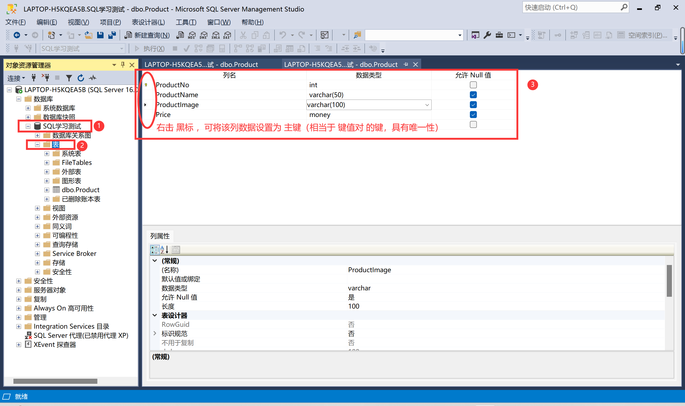录入数据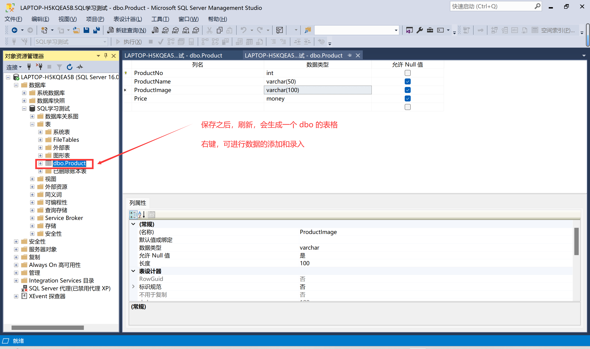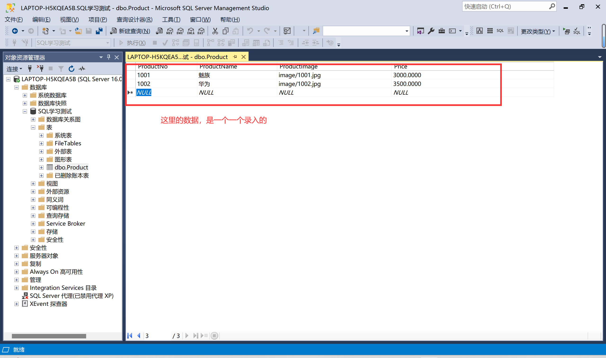
7.1.7 使用SQL脚本
首先进入脚本界面，选中数据库，并
新建查询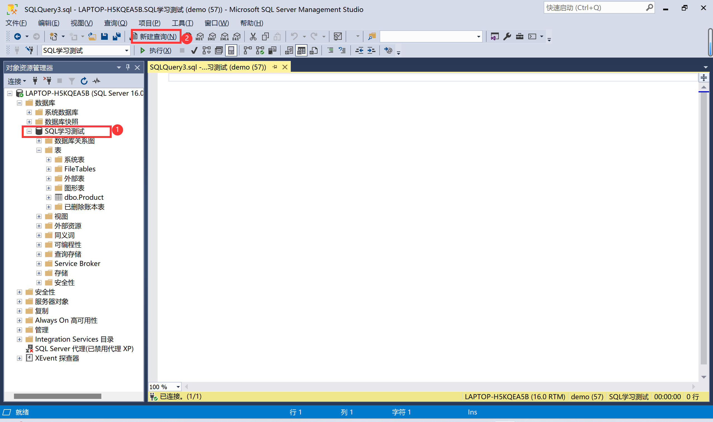一些脚本代码
- 启动数据库
/*
-- 启动指定数据库
-- use 数据库名
-- go
*/
// 下面代码为 SQL 语言，之后的代码也一样
use SQL学习测试
go- 添加数据
// -- 添加 insert into ，into这个关键词可以省略
// SQL 语言
insert Product([ProductNo], [ProductName], [ProductImage], [Price])
values(1002,'华为','image/xxx.jpg',9000)- 删除数据
// -- 删除 delete from，from这个关键词也可以省略
// SQL 语言
delete Product
where productName='华为' -- where 关键词是条件
- 修改数据
// -- 修改 update
// SQL 语言
update Product
set productname='华为mate40',productimage='image/huawei.jpg',price=10000
where productNo=1003- 查询数据
// -- 查询 select ... from ...
// SQL 语言
select * from Product -- * 代表所有列
select [ProductNo], [ProductName] from Product -- 查询指定列
where not productno=1001 -- 逻辑关键词 not and or 举例：where prductno=1003 or price>50007.1.8 数据关联
7.1.8.1 创建数据关联关系
- 选中表格，右键
关系，添加一个关系 - 在
常规里，选中表和列规范的...，设置主键表和外键表 - 并将
在创建或重新启用时检查现有数据设置为否
7.1.8.2 关联表查询
一些查询代码示例
- 外联接
// -- 外联接 inner join
// -- as 关键字可以进行重命名
// -- 表格也可以取别名 如：Product a
// SQL 语言
select [ProductNo] as 编号, [ProductName], [ProductImage], [Price], a.[typeId], b.typeName
// -- 对表格取别名
from Product a
inner join ProductType b
on(a.typeId = b.typeId)
// -- 如果还有表需要关联检索，继续写 inner join... on...
// -- inner join otherTable
// -- on(a.ProductName=otherTable.Name)- 内联接
// -- 左外联接 left join 以左表为基准进行匹配，匹配到了就显示，没匹配到就不显示
// SQL 语言
select [ProductNo], [ProductName], [ProductImage], [Price], Product.[typeId], ProductType.typeName
from ProductType left join Product
on(Product.typeId = ProductType.typeId)// -- 右外联接 right join
// SQL 语言
select [ProductNo], [ProductName], [ProductImage], [Price], Product.[typeId], ProductType.typeName
from ProductType right join Product
on(Product.typeId = ProductType.typeId)7.1.9 聚合函数
除了
count()，其余的avg() / sum() / max() / min()均针对数字类型和日期计数
count()
// -- count 统计记录条数，当有一列中的某个单元格值为 NULL 时，不对其进行计数
// SQL 语言
select COUNT(ProductName) from Product
// -- 统计全部，count()参数可写 */1
select count(*) from Product
select count(1) from Product- 求均值
avg()
// SQL
select avg(Price) from Product- 求和
sum()
// SQL
select sum(Price) from Product- 求最值
max() / min()
// SQL
select max(Price) from Product
select min(Price) from Product7.1.10 排序与分组查询
- 排序
order by ... asc/desc
// -- 排序 order by asc/desc 升序/降序
// SQL
select * from Product
// -- 先用 Price 降序排列，若 Price 有相同值，再用 typeId 进行二次降序排列
order by Price desc,typeId asc
- 分组
group by
// -- 分组 group by
// SQL
select ProductType.typeName as 类型, count(Product.ProductNo) as 数量
from Product left join ProductType
on(Product.typeId=ProductType.typeId)
// -- where
group by ProductType.typeName
order by 数量 desc一些==注意事项==
– 语法有一定顺序
– order 一定在最后
– group 在 order 前面
– where 在 group 前面，select…from …on..后面
7.2 C#中使用SQL
7.2.1 基本步骤
案例见
D:\Program Files\Microsoft Visual Studio\projects\毕设\数据库学习\用户登录\UserLogIn
- 第一步：创建数据库对象
/*
字符串参数分别为：
Server : 服务器名称
uid : 登录名
pwd : 密码
database : 数据库名称
*/
SqlConnection conn = new SqlConnection("Server = LAPTOP-H5KQEA5B;uid = demo; pwd = 123456;database = SQL学习测试");- 第二步：打开数据库
conn.Open();- 第三步：创建执行脚本对象
string qq = this.txtQQ.Text;
string pwd = this.txtPwd.Text;
// SQL脚本代码
string sql = $"select count(1) from UserInfos where qq = '{qq}' and pwd = '{pwd}'";
// 脚本对象构造函数参数：(脚本代码字符串, 数据库对象)
SqlCommand cmd = new SqlCommand(sql, conn);- 第四步：执行脚本
// 执行脚本，并调用相应方法获取指定返回值
// 如：返回脚本执行后结果的第一行第一列
int result = (int)cmd.ExecuteScalar();- 第五步：关闭数据库连接对象
conn.Close();7.2.2 防SQL注入
按 《用户登录》项目输入账号
10001，密码不输入123456，而输入' or 1=1 --，也会成功登录，为了避免此情况发生，在c#程序中，对代码进行处理，避免SQL注入
- 首先，通过
SqlParameter对象进行参数化
// 构造函数参数为：("@数据库元素名称", 用户输入Text)
SqlParameter para1 = new SqlParameter("@qq", qq);
SqlParameter para2 = new SqlParameter("@Pwd", pwd);- 然后，在脚本对象
SqlCommand后，对SqlParameter对象进行添加
cmd.Parameters.Add(para1);
cmd.Parameters.Add(para2);八、曲线绘制
- 使用chart控件进行曲线绘制
8.1 关于 chart 的一些属性
- 假设只有一个
ChartAreas，即ChartAreas[0]
8.1.1 坐标轴 显示范围 及 刻度间隔
chart1.ChartAreas[0].AxisY.Maximum = 45; // 设置y轴 最大取值
chart1.ChartAreas[0].AxisY.Minimum = -5; // 设置y轴 最小取值
chart1.ChartAreas[0].AxisY.Interval = 5; // 设置y轴 刻度间隔
chart1.ChartAreas[0].AxisX.Maximum = 45; // 设置x轴 最大取值
chart1.ChartAreas[0].AxisX.Minimum = -5; // 设置x轴 最小取值
chart1.ChartAreas[0].AxisX.Interval = 5; // 设置x轴 刻度间隔8.1.2 次网格
// 开启y轴次网格
chart1.ChartAreas[0].AxisY.MinorGrid.Enabled = true;
// 设置次网格线条样式，dash为破折号即虚线
chart1.ChartAreas[0].AxisY.MinorGrid.LineDashStyle = ChartDashStyle.Dash;
// 设置次网格线条颜色
chart1.ChartAreas[0].AxisY.MinorGrid.LineColor = Color.DarkGray;
// 设置次网格刻度间隔
chart1.ChartAreas[0].AxisY.MinorGrid.Interval = chart1.ChartAreas[0].AxisY.Interval/2;8.1.3 图例
// 清除图例
chart1.Legends.Clear();8.1.4 条状带
// 实例化条状带
StripLine stripLine1 = new StripLine();
// 条状带宽
stripLine1.StripWidth = 5;
// 设置各条状带间隔，值为0，表示所有条状带重合
stripLine1.Interval = 0;
// 条状带底部起始刻度
stripLine1.IntervalOffset = 3.5;
// 条状带颜色
stripLine1.BackColor = Color.FromArgb(120, Color.Red); //alpha 120，为透明度，取值0-255
// 将条状带添加到 ChartAreas[0] 处
chart1.ChartAreas[0].AxisY.StripLines.Add(stripLine1);8.1.5 数据序列 Series
// 设置线宽
chart1.Series[0].BorderWidth = 3;
// 设置曲线类型
chart1.Series[0].ChartType = SeriesChartType.Line;
// 添加序列
chart1.Series[0].Points.AddXY(0, 10);
chart1.Series[0].Points.AddXY(1, 20);
// 数据绑定，当 xVals,yVals 的值变化，曲线对应变化
chart1.Series[0].Points.DataBindXY(xVals,yVals);8.2 一些应用
8.2.1 设置 时间轴
// 设置轴标签样式
chart1.ChartAreas[0].AxisX.LabelStyle.Format = "HH:mm:ss";
// 设置x轴值类型为 DateTime
chart1.Series[0].XValueType = ChartValueType.DateTime;
// 使用 ToOADate() 将时间对象转换为可显示的 数值
chart1.ChartAreas[0].AxisX.Minimum = DateTime.Now.ToOADate();
// 将 x轴 显示的最大时间设置为 3分钟 后的时刻
chart1.ChartAreas[0].AxisX.Maximum = DateTime.Now.AddMinutes(3).ToOADate();
// 设置 x轴 每一刻度间隔类型
chart1.ChartAreas[0].AxisX.IntervalType = DateTimeIntervalType.Seconds;
// 设置刻度间隔为 5s
chart1.ChartAreas[0].AxisX.Interval = 5;